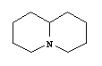
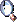
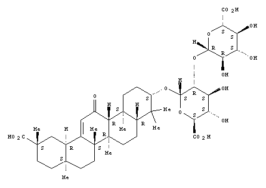
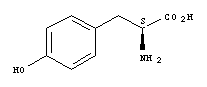
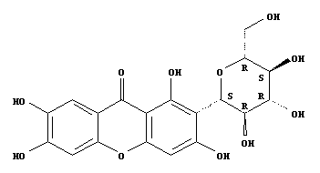

A | B | C | D | E | F | G | H | I | J | K | L | M | N | O | P | Q | R | S | T | U | V | W | X |Z
quassinoids: subclass of triterpenoids (nortriterpenoid) composed of 19-20 carbon atoms.
| Quassinoid base. |
Simarolide, C27 H36 O9. |
| Quercetin, C15 H10 O7. |
quincuncial: of aestivation in a flower, a variant of imbricate, such that one sepal (e.g.) have one edge outside the adjacent sepal and the other inside, two sepals have both edges inside, and two sepals have both edges outside, c.f. cochleate, contorted, contortiplicate, crumpled, decussate.
quinolizidines: alkaloids derived from lysine and with two fused 6-membered rings that share a nitrogen.
| Quinolizidine, C9 H17 N.  |
Cystisine, C19 H31 N2 O4 P. |
| Lupinine, C10 H19 N O. |
quinones: the general name for aromatic compounds that have two atoms of hydrogen replaced by two atoms of oxygen, usually yellow, red, or orange, see anthraquinones, benzoquinones, hydroquinones, naphthoquinones.
quinque- (prefix) = five of whatever is qualified by the prefix.
RLD: root length density, or root length per unit volume, c.f. SRL.
raceme: an indeterminate inflorescence, the axis producing a series of flowers on lateral pedicels, the oldest at the base and the youngest at the top, adj. racemose, c.f. cyme and panicle, for variants, see botryoid, capitulum, corymb, fascicle, raceme, spadix, spike, thyrse, umbel. 
raceme (in Poaceae): of an inflorescence with unbranched axes bearing spikelets, , the axes may be solitray, digitate, or scattered along a higher order axis, c.f. panicle, see also pedicel, peduncle.
rachis: that part of the axis of a pinnate or more highly compound (or pseudocompound) leaf that bears leaflets, pl. r(h)achises, c.f. petiole.
rachis (rhachis), more specifically, inflorescence rachis = inflorescence axis, c.f. also pedicel, peduncle, or in grasses, the axis of a raceme, see also panicle, pedicel, peduncle.
rachilla (rhachilla): especially of palms, the lateral or secondary branches of the inflorescence, and of a grass spikelet, the axis above the glumes that bears the florets, c.f. inflorescence axis, pedicel, peduncle.
radially symmetrical = polysymmetrical.
radical: of leaves, clustered at the base of the stem, see basal, rosette, c.f. cauline.
radicle: the basal continuation of the hypocotyl of an embryo or seedling that gives rise to the root system of the adult plant (see taproot), sometimes more or less abortive, c.f. coleoptile, coleorhiza, collet, cotyledon, eophyll, epiblast, epicotyl, mesocotyl, plumule, primary leaf, scutellum.
raffinose: an oligosaccharide made up of three sugar units, galactose, fructose and glucose, serially linked, c.f. stachyose.
ramiflorous: borne below the current leaves on recently formed woody branches, commonly used to describe general inflorescence position, c.f. axillary, cauliflorous, terminal.
rank: used when organs such as leaves are arranged in vertical series (distichous = two-ranked, etc.); also used to refer to the degree of branching.
rank: in the taxonomic hierarchy, one of the levels assigned to plant groups; these denote relative inclusion relationships, e.g. a family will include a genus or genera, but not vice versa; members of the one rank are not equivalent other than - one hopes - all being monophyletic and are therefore not really comparable; for the main ranks mentioned here, see class, order, family, genus, species (which may well not be monophyletic...).
ranunculaceous (of stomata) = anomocytic.
raphe: where the funicle is adnate to the body of the ovule, see also antiraphe, chalaza, embryo sac, integument, lagenostome, megaspore, micropyle, nucellus, pollen chamber, obturator.
raphides: needle-like crystals of calcium oxalate that occur in bundles in the vacuoles of some plant cells, see biforines, c.f. crystal sand, druses, prisms, styloids.
ray: (anatomy) in xylem or phloem, a vertically elongated band of often radially elongated parenchymatous cells traversing the conducting elements, see tile cells, also heterogeneous, homogeneous and heterocellular, homocellular.
ray: of a compound umbel, one of the first series of branches of the inflorescence axis, of an asteraceous flower head or capitulum, a spreading, petal-like floret.
ray floret: a monosymmetric flower towards the periphery of a capitulum, esp. in Asteraceae, ligulate, with a split monosymmetric corolla, c.f. disc floret.
ray initials: a kind of cambial initial in the vascular cambium, vertical series of low cells the division and subsequent differentiation of which that produce the rays, c.f. fusiform initials.
ray parenchyma: radially orientated xylem parenchyma in the wood, see ray type, c.f. axial parenchyma.
reaction wood: wood often with a distinctive anatomy and position formed where a branch joins the stem, see compression and tension wood.
recalcitrant: of germination, and sometimes also pollen viability, the seed or pollrn grain needing to remain hydrated if germination is to occur and not tolerating drying or freezing (and often even temperatures below 100 C), c.f. orthodox, see also after-ripening.
recaulescent: of axillary branching, a kind of metatopic growth where the subtending leaf is as it were shifted onto the axis produced by its axillary meristem, the result being a "stalk" on which axillary bud and leaf are borne, c.f. concaulescent, also epicaulescent.
receptacle: the axis of a flower on which the perianth, androecium and gynoecium are borne; in Asteraceae, used to refer to the often swollen and apically flattened part of the stem bearing the flowers and inflorescence bracts; in monilophytes, the part of the sorus bearing sporangia.
receptacular epigyny: of epigyny, when the floral apex is initially convex, but after gynoecial initiation the periphery of the floral apex expands and raises, forming a basin in the center of which the carpels are borne and on the periphery of which the perianth members and androecium are borne, i.e. epigyny is due to development of axial tissues (Kuzoff et al. 2001), c.f. appendicular epigyny.
receptacular nectary: a nectary in the flower supplied by branches of the receptacular or androecial vasculature, c.f. gynoecial nectary.
recurved: curved or curled downwards or backwards, c.f. incurved.
reduced: anther wall development in which the primary parietal layer gives rise to two secondary parietal layers, the outer producing the endothecium only, the inner producing the tapetum only, c.f. basic, dicotyledonous, monocotyledonous, reduced.
reduplicate: of aestivation, valvate, the edges meeting, and although not overlapping, they are recurved, c.f. crumpled, decussate, induplicate, open.
reduplicate: of plicate leaves, esp. in palms, the units of the leaves having their abaxial surfaces facing each other, inverted V-shaped, c.f. foliate, induplicate.
reflectional: on of the basic types of symmetry, as in the identity between a figure and its relection in a mirror, e.g. mono-, disymmetry, etc., c.f. rotational and translational.
reflexed: bent sharply downwards or backwards, c.f. inflexed.
regular (of floral symmetry) = polysymmetric.
reiteration: of plant architecture, when the characteristic construction of the individual is repeated by branch systems that develop on a plant after damage, or sometimes as the result of natural causes.
reniform = kidney-shaped.
reparatory strand: a strand of vascular tissue that fills ("repairs") the leaf gap left by the outgoing leaf trace, a branch of the sympodial units making up the central stele of seed plants.
replum: when placentation is parietal, = a "false" septum joining the placentae.
repent: plant with stem growing along the ground, usually rooting from the nodes, see ascending, decumbent, erect, procumbent.
reproduction: the general process by which new plants are formed, in particular c.f. apomixis, amphimixis.
reproductive nectary: a nectary that is found on the inflorescence or flower or associated structures - a positional definition - c.f. extrareproductive nectary.
resins: lipid-soluble terpenes or phenols, c.f. gums, mucilages, latex, oils, waxes.
resupinate: of floral symmetry, twisted through 180o, e.g. as with the ovary of many Orchidaceae; note that resupination may result in the flower maintaining an inverted (as in Orchidaceae) or "normal" position (as in Thunbergia mysorensis - see Bell & Bryan 2008).
resurrection plant: a plant whose leaves can dry out and remain dry for years, and then take in water and function normally when there is rain, c.f. anhydrobiosis, diallagy.
reticulate: in general, forming a network.
reticulate: a term used to describe the surface of a pollen grain, a network-like pattern consisting of lumina or other spaces wider than 1µm bordered by elements narrower than the lumina, whether pilae (retipilate) or muri, c.f. baculate, echinate, fossulate, gemmate, foveolate, pilate, lophate, psilate, rugulate, scabrate, striate, verrucose.
reticulate: in leaf venation, where the veins join or anastomose (so technically forming cycles), one of three terms that describe the basic organization of venation, see also dendritic and hierarchical; in addition, a rather loose term describing leaves where reticulation and anastomosis predominate in the venation, c.f. parallel-veined.
reticulodromous: of leaf venation, pinnate venation (camptodromous in particular), in which the secondary veins lose their identities towards the margin as they branch repeatedly, c.f. brochidodromous, eucamptodromous in particular, also c.f. acrodromous, actinodromous, campylodromous, cladodromous, craspedodromous, dichotomous, flabellate, parallelodromous, semicraspedodromous, simple-craspedodromous.
retinaculum/retinacle = corpusculum (flowers of Orchidaceae, Apocynaceae-Asclepiadoideae), c.f. staminal retinaculum.
retinaculum = jaculator (in fruits of Acanthaceae).
retipilate: referring to the surface of a pollen grain whose sculpturing is made up of pilae arranged in a reticulate pattern, c.f. baculate, echinate, fossulate, gemmate, foveolate, pilate, lophate, psilate, reticulate, rugulate, scabrate, striate, verrucose.
retrorse: bent, and pointing away from the apex, c.f. antrorse, erect.
retuse: of the apex of any laminar structure, e.g., petal or leaf blade, very blunt and slightly notched and divided less than 5% the length of the structure, c.f. emarginate, lobed in particular, c.f. also acute, attenuate, acumen, apiculum, arista, awn, cuneate, caudate, cuspidate, mucronate, muticous, obtuse, rounded, truncate, c.f. also cordate, hastate, oblique, runcinate, sagittate (esp. of lamina base).
revolute: of leaf vernation, the margins of the lamina curve abaxially towards the centre/midrib, c.f. circinate, conduplicate, conduplicate-flat, conduplicate-involute, conduplicate-plicate, curved, flat, involute, plicate, supervolute, supervolute-curved, supervolute-involute.
rhabdophyllode = a variant of a phyllode.
rhachilla, rhachis: see rachilla, rachis.
rheophyte: a narrow-leaves plant, usually a shrub, growing in or by rivers and periodically subject to immersion in fast-flowing waters, c.f. acaulescent, arborescent, dendroid, frutescent, fruticose, herb, liane, suffrutescent, schopfbaum, shrub, subshrub, tree, vine, see also life forms.
rhexigenous: an intercellular space caused by the rupture of the cells there, c.f. expansigenous, lysigenous, schizogenous.
rhinanthoid (of a floral aestivation) = ascending cochleate.
rhipidium: of a monochasial cymose inflorescence of some monocots, flowers arising successively from the adaxial prophylls, thus alternating from one side of the axis to the other side, and all being in a single plane, the whole inflorescence often appearing corymbose from a lateral view, c.f. drepanium, helicoid cyme, scorpioid cyme.
rhizodermis: the primary surface layer of the root, originating from the outermost layers of the cortex or having a common origin with cells of the root cap, continuous with the epidermis of the stem, c.f. velamen.
rhizoid: a thread-like, uniseriate (unicellular) absorbing structure in the gametophytes (and sometimes sporophytes) of ferns, etc., c.f. root.
rhizoid: unicellular trichomes on the collar in seedlings, especially those of monocots; basically precocious roothairs, but longer, denser, and/or living longer, but of course also different in position.
rhizome: a slender to much swollen underground stem that grows more or less horizontally, c.f. bulb, bulbil, caudex, corm, culm, dropper, lignotuber, pseudobulb, runner, stolon, tuber, turion.
rhizosheath: made up of mucilage from the root cap, root cap cells (maybe living), soil particles, bacteria, etc., all anchored to root hairs and forming a sheath surrounding the young root; found e.g. in many Poaceae (McCulley 1995), c.f. dauciform root clusters, also rhizosphere.
rhizosphere: the outside of the root, i.e. the root cap and the rhizodermis, for example, and the soil immediately surrounding them, influenced by secretions from the root and bacteria associated with it, c.f. phyllosphere.
rhombic: a term used for outlines and plane shapes, with length:breadth ratio 2:1 - 3:2, widest and more or less angled at the middle, pointed at the apex and base, see broadly, broad-transverse, narrowly, transverse, c.f. elliptic, obovate, ovate, triangular, trullate.
rhytidome: cork cambium and the tissues it isolates, since such cambia are often formed successively deeper and deeper in the stem, there may be pockets of cortical or phloem tissue in with the cork.
ribose: a sugar.
rind: a vague and imprecise term, often applied to the outer part of a fruit that differs in texture (harder, tougher) from the inner part.
ringent (of monosymmetric flowers) = personate.
ring porous: of porous wood, with vessels in more or less distinct rings, usually only at the beginning of the season's growth, c.f. diffuse porous.
root: commonly thought of as one of the three basic parts of the seed plant body along with the leaf and stem, that part of the axial system which is usually underground and more or less positively geotropic, does not bear leaves and only rarely shoots, is endogenous in origin, indeterminate in growth, root cap and root hairs, often with secondary thickening, see root tip , see also fibrous root, hair root, magnolioid root, nodule, tap root, and tuberous root; roots are sometimes arranged in distinctive clusters, see coralloid, dauciform and proteoid root clusters, also the rhizosheath (c.f. rhizosphere), see also primary and secondary root systems, also pneumatophore and pneumathode, c.f. also the cross zone, also allorhizy and homorhizy, the basic relationship between stem and root), c.f. also rhizoid.
root apical meristem (RAM): a group of pluripotent cells at the apex of a root from which tissues of the root differentiate, see closed meristem, open meristem.
root cap: a group of cells at the tip of the root that covers the apical meristem and protects it, made up of border cells, columella, peripheral root cap, and protoderm.
root hair: a projection from an epidermal cell of the root.
root tip: the apical part of the root including the apical meristem and root cap.
rootstock: a short, erect, more or less swollen structure at the junction of the root and shoot systems of a plant, c.f. xylopodium.
rosette leaves: the leaves at the base of the stem when these are separated by very short internodes and lie more or less flat on the ground, so forming a circle, see also basal and radical leaves, c.f. cauline.
rosmarinic acid: type of phenylpropanoid involving cinnamic acid derivatives; a depside of caffeic acid linked to dihydroxyphenyllactic acic, c.f. chlorogenic acid.
rosoid: a leaf tooth in which the central vein terminates subapically and there is a large clear glandular foramen, two straight higher-order secondary veins also terminate in the foramen, c.f. begonioid, chloranthoid, cucurbitoid, cunonioid, dillenioid, malvoid, monimioid, platanoid, salicoid, spinose, theoid, urticoid, violoid.
rostellum: in orchids, the (as stipes [hamulus, tegula], viscidium) apical portion of the median stigmatic lobe, sometimes used to refer only to the modified non-receptive part (see Rasmussen 1982), for other commonly-used terms specific to orchid flowers, see caudicula, column, incumbent, labellum, sectile, and stipes, also epichile, hypochile.
rostrum (rostrate) = beak (beaked).
rosulate: clustered into a rosette, e.g. of basal leaves of some annuals and biennials.
rot: fungal wood degradation, see brown rot, soft rot, and white rot.
rotate: circular and flattened, e.g. of a polysymmetric corolla with a very short tube and spreading lobes, c.f. campanulate, infundibular, salverform, tubular, urceolate.
rotational: on of the basic types of symmetry, identity of two figures after rotation of the first, thus the flowers of Vinca show a 5-fold rotational symmetry achieved after bringing the five asymmetrical corolla lobes sequentially to the upper (or other invariant) position, c.f. reflectional and translational.
rotenoids: flavonoids, derived from isoflavones, with an extra carbon atom from S-adenosyl methionine and incorporating a prenyl group into the isoflavone structure.
| Gliricidol, C17 H14 O6. |
Rotenone, C23 H22 O6. |
rounded: of the shape of the apex or base in particular, without any angles and generally convex in apperance, c.f. acute, attenuate, acumen, apiculum, arista, awn, cuneate, caudate, cuspidate, emarginate, mucronate, muticous, obtuse, retuse, truncate, c.f. also cordate, hastate, oblique, runcinate, sagittate (esp. of lamina base).
route I: a kind of iridoid, derived from deoxyloganicacid, the normal route I iridoid not undergoing oxidation, see also secoiridoids, c.f. route II.
| Loganin, C17 H26 O10. |
route II: a kind of iridoid derived from epi-deoxyloganicacid, see carboxylated (normal) iridoids, decarboxylated iridoids, c.f. route I.
rubber: a component of latex, made up of isoprene units, cis 1,4-polyisoprene, Z polyisoprene, c.f. chicle, gutta, gutta percha.
rubiaceous (of stomata) = paracytic.
rubisco: the very abundant and inefficient CO2 fixing enzyme, ribulose biphosphate carboxylase/oxygenase.
rudimentary: poorly developed and not functional, c.f. obsolescent, vestigial, obsolete.
rugate: in some literature, this word is used for pollen with elongated or furrow-like apertures that are globally distributed over the pollen, but I cannot see any need for it.
rugose: deeply wrinkled, dim. rugulose, with minute wrinkles.
rugulate: a term used to describe the pollen surface, with elongated sexine elements more than 1µm long arranged in an irregular pattern intermediate between reticulate, retipilate and striate, c.f. also baculate, echinate, fossulate, gemmate, foveolate, pilate, lophate, psilate, scabrate, verrucose.
ruminate: commonly used of endosperm, inpushings of the seed coat that more or less give the appearance of the villi of the rumen or intestine to the cut surface of the seed, c.f. alveolate, aulacospermous, bothrospermous, also condyle.
runcinate: deeply lobed and with the lobes slanted away from the apex, c.f. acute, attenuate, acumen, apiculum, arista, awn, cuneate, caudate, cuspidate, emarginate, mucronate, muticous, obtuse, retuse, rounded, truncate, c.f. also cordate, hastate, oblique, sagittate (esp. of lamina base).
runner: rather vague, often used to refer to some kind of slender stem, in particular to a stem not bearing roots between the rooted plants, whether or not made up of one or more internodes, c.f. bulb, bulbil, caudex, corm, culm, dropper, lignotuber, pseudobulb, rhizome, runner, stolon, tuber, turion..
ruspolinone: a pyrrolidine alkaloid.
S-lignin: referring to a kind of lignin in which there is a major percentage of syringyl units - sinapyl is the alcohol - and that is found mostly in angiosperms (other than monocots), c.f. G and H.
SLA: the ratio of leaf area to dry mass, the inverse of MA.
SPoSiCl: of one clade of a pair of sister taxa, or a series of clades at successive sister taxa (= SPoSiCles), that is/are notably less speciose than the other(s), i.e. Species Poor Sister Clade, to rhythm with "popsicle".
SRL: specific root length, or root length per unit biomass, c.f. RLD.
saccate = pouched.
saccus/sacci: wing- or bladder-like extension(s) of the pollen exine at leat partly filled with alveolate material.
sagittate: shaped like an arrow-head, c.f. acute, attenuate, acumen, apiculum, arista, awn, cuneate, caudate, cuspidate, emarginate, mucronate, muticous, obtuse, retuse, rounded, truncate, c.f. also cordate, hastate, oblique, runcinate (esp. of lamina base).
salicoid: a leaf tooth in which the medial vein ends in dark but not opaque persistent spherical callosity, no laterals are involved, perhaps close to a theoid tooth, at times functioning as an extrafloral nectary, c.f. also begonioid, chloranthoid, cucurbitoid, cunonioid, dillenioid, malvoid, monimioid, platanoid, rosoid, spinose, urticoid, violoid.
salicylic acid: orthohydroxybenzoic acid, obtained from the bark of the white willow and wintergreen leaves, its salts are the salicylates.
| Salicylic acid, C7 H6 O3. |
salverform: e.g. of a polysymmetric corolla, salver- or trumpet-shaped, like the corolla of Primula with a long, slender tube and abruptly expanded flat, spreading limb (rotate in one sense), c.f. campanulate, rotate, infundibular, tubular, urceolate.
samara: a dry, indehiscent fruit with its wall expanded into a wing or wings, a variant of an achene or a mericarp of a schizocarp.
sand, see crystal sand.
Sanio, see Bars of Sanio.
saponins: water-soluble and sometimes toxic glycosides based on steroid or terpenoid alcohols, become a foam when in solution and then shaken.
| Glycyrrhizin, C42 H62 O16.  |
sapromy[i]ophilous: a variant of entomophilous pollination in which the flowers are pollinated by flies, the flowers having a distinctive syndrome (e.g. flowers/flower-like inflorescences large, purplish color, with the odour of carrion or of decay in general, thermogenic), c.f. cantharophilous, melittophilous , myophilous, phalaenophilous, psychophilous, sphigophilous.
saprobe/saprophyte/saprotroph: a heterotroph, one obtaining complex nutrients from the decay of other organisms and usually lacking chlorophyll itself, c.f. autotroph, biotroph, hemiparasite, hyperparasite, mixotroph, myco-heterotroph, parasite.
sapwood: the outer and still functional portion of the wood of a trunk or large root, c.f. heartwood.
sarcotesta: a fleshy testa, or a fleshy layer of the testa (mesotesta), outside the sclerotesta, when the latter is present, c.f. also aril, arillode, caruncle, elaiosome.
saturated: e.g. of fatty acids, lacking double bonds, c.f. unsaturated.
| Palmitic acid, C16 H32 O2. |
| Lauric acid, C12 H24 O2. |
| Myristic acid, C14 H28 O2. |
saxicolous: of a plant growing on rock, see epilithic.
scabrate: a term used to describe the pollen surface, ornamented in any way with elements less than 1µm in all directions, c.f. baculate, echinate, fossulate, gemmate, foveolate, pilate, lophate, psilate, reticulate, retipilate, rugulate, striate, verrucose.
scabrous (= scabrid): rough to the touch, dim. scaberulous, slightly or minutely rough to the touch, minutely scabrous.
scalariform: having a ladder-like pattern; of a vessel, the end walls having one to many bars across them, c.f. simple; of pits, elongated in outline, c.f. bordered, simple, vestured.
scale: a rather vague term, usually a thin flap of tissue of epidermal origin, e.g. at the base of a stamen in Simaroubaceae.
scale leaf: a reduced leaf, often ± dry, non-photosynthetic, and protective, e.g. surrounding a dormant bud, a budscale (see perulate bud).
scale: a thin, more or less scarious trichome which is flattened and variously shaped, c.f. hair.
scandent: climbing, see liane or vine.
scape: the stem-like peduncle of a plant with radical or rosette leaves that lacks leaves along its length, c.f. inflorescence axis, sculpture elements.
scarious: dry and membranous in texture, c.f. chaffy, chartaceous, coriaceous, papyraceous.
Schisandra-type embryo sac: an embryo sac type, the types based on variation in megasporogensis and megagametogenesis, unisporic (from the chalazal cell), 4-celled, all cells haploid, c.f. Adoxa, Allium, Drusa, Endymion, Fritillaria, Oenothera, Penaea, Peperomia, Plumbagella, Plumbago, Polygonum.
schizo- (prefix): split.
schizocarp: a dry, dehiscent fruit formed from more than one carpel and breaking apart septicidally into 1-carpellate units (mericarps) when ripe, these containing one or more seeds, see also eremocarp, c.f. capsule, follicle, lomentum.
schizogenous: of cavities in plants, formed by the separation of cells down their middle lamellae, c.f. expansigenous, lysigenous, rhexigenous.
schopfbaum: of habit, an unbranched woody plant less than about 10 m tall and often with a rather stout trunk and a tuft of large leaves at the top, c.f. acaulescent, arborescent, dendroid, frutescent, fruticose, herb, liane, rheophyte, shrub, subshrub, suffrutescent, tree, vine, see also life forms.
Scilla-type embryo sac = Allium-type.
scion: in grafting, the stem of one plant that is variously attached or inserted onto or into the stock.
sclereid: a dead cell that is a component of sclerenchyma, variously shaped but usually at most only moderately elongated and with a strongly lignified wall, c.f. fibre, see astrosclereid, filiform sclereid, brachysclereid, macrosclereid, osteosclereid, trichosclereid.
sclerenchyma: mechanical tissue made up of fibres and/or sclereids, c.f. aerenchyma, collenchyma, parenchyma.
sclerophyll: with stiff, hard leaves usually with much sclerenchyma, c.f. mesophyll.
scleromorphic: referring to hardness or toughness, especially of leaves (sclerophyll above), whether in respoinse to dry climate or nutrient-poor conditions, c.f. xeromorphic.
sclerotesta: a stony, sclerenchymatous layer of the testa, usually mesotestal in origin and inside the sarcotesta.
scopoletin: a coumarin.
scorpioid cyme: a monochasial cymose inflorescence branching alternately from a bracteole/prophyll on one side of a pedicel and then from one on the other side, the flowers being borne in two rows, the whole more or less zig-zag but also coiled like the tail of a scorpion, c.f. drepanium, helicoid cyme, rhipidium, see also acervulus. (bottom left hand image).
sculpture elements: making up the supractectal structures of the ektexine of a pollen grain.
scutellum: a special term applied to the more or less shield-shaped and absorbtive haustorium at the end of the cotyledonary hyperphyll in the embryo or seedling of grasses (i.e. the term haustorium itself would really do), of a monocot seedling, see also mesocotyl, coleorhiza, hyperphyll (apocole, /scutellum, phanomer), hypophyll (cotyledonary sheath, coleoptile), collar (epiblast, periblast).
secoiridoid: a class of route I iridoid derived from deoxyloganic acid via oxidation to carboxyl at C11.
| Secoiridoid base. |
Deutzioside, C15 H22 O9. |
| Patrinoside, C21 H34 O11. |
Secologanin, C17 H24 O10. |
secondary: in pollination, where pollen is presented to the pollinator elsewhere than directly on the anther, see brush presentation, pollen presenter, pump presentation.
secondary growth: growth in width caused by the elongation, differentiation and maturation of cells derived from the lateral meristems, c.f. primary growth.
secondary meristem, loosely, = lateral meristem.
secondary metabolite: a rather misleading term referring to compounds not involved in photosynthesis, respiration and other basic metabolic activities of the cells.
secondary nucleus = primary endosperm cell or nucleus
secondary root system: roots that develop from the base of the stem, as with the fibrous root system so widespread in monilophytes and monocots, c.f. primary root system.
secondary thickening: increase in diameter of the stem because of the activity of the lateral meristems.
secondary tissue: the differentiated products of lateral meristems.
secondary wall: that part of the cell wall deposited during late expansion growth of the cells with strengthening, etc., functions, and made up of cellulose fibrils, lignin, etc., c.f. middle lamella, plasmodesmata, primary wall.
secretory (of tapetum) = glandular.
sectile: in Orchidaceae, refering to the soft and friable - "mealy" - texture of some pollinia made up of massulae - for other commonly-used terms specific to orchid flowers, see caudicula, column, hamulus, incumbent, labellum, rostellum, stipes, tegula, viscidium, also epichile, hypochile.
secund: with all the parts grouped on one side or turned to one side, applied especially how flowers are held in an inflorescence or stamens in a flower, c.f. diffuse, divaricate.
seed: a propagating organ formed in the reproductive cycle of gymnosperms and angiosperms, derived from the ovule and usually consisting of a protective seed coat (rarely absent) formed from the integument or integuments (see hilum, micropyle, linea fissura, pleurogram) and enclosing an embryo and often also food reserves (endosperm, primary endosperm or perisperm), see also aril, arillode, caruncle, coma, elaiosome, strophiole, ("appendages"), and chlamydospermous (type of seed).
seed coat: covering of seed derived from ovular - mainly integumentary - tissue, but to be used only when not specified more precisely, for which see tegmen and testa.
seedling: the young plant that results from germination of the seed, see apical hook, collet, cotyledon, eophyll, epicotyl, hypocotyl, plumule, primary leaf, radicle, of a monocot seedling, see also mesocotyl, coleorhiza, hyperphyll (apocole, haustorium/scutellum, phanomer), hypophyll (cotyledonary sheath, coleoptile), collar (epiblast, periblast).
segment: a part or sub-division of a structure.
self pollination: pollination of a flower by pollen from the same plant, c.f. autogamy, geitonogamy, c.f. also allogamy, cross pollination.
semaphyll: any structure, bract, sepal (when the rest of the perianth is inconspicuous), etc., that is modified and forms the part of the flower that attracts the pollinator.
semelparous: of reproduction, when there is just a single episode of flowering in the life of an individual, c.f. iteroparous, plietesial, c.f. more from the point of view of meristem persistence hapaxanthic, monocarpic, pleonanthic, and of plant duration, annual, biennial, ephemeral, perennial.
semicraspedodromous: pinnate venation, craspedodromous in particular, in which the secondary veins branch just inside the margin, one of the branches terminating at the margin, the other joining the superadjacent secondary vein, c.f. simple craspedodromous in particular, also c.f. acrodromous, brochidodromous, campylodromous, cladodromous, eucamptodromous.
semidry: of the surface of the stigma, which has secretory cells, but the exudate is retained by the cuticle and/or protein pellicle, but these can be ruptured by pressure exerted by the exudate or by physical friction (Verstraete et al. 2014), as by the pollinator, c.f. dry, and wet.
semitectate: pollen in which the sexine forms a incomplete roof over the columellae, granules or other infratectal elements, the tectum in outer view often forming a reticulate pattern, c.f. atectate, tectate.
senecionine: a pyrrolizidine alkaloid.
senescence: age-related processes that signal the beginning of the death of a plant or plant part.
sensu lato: after a name, meaning that the name/term is to be taken with a broad circumscription, often s. lat., c.f. sensu stricto.
sensu stricto: after a name, meaning that the name/term is to be taken with a narrow circumscription, often s. str., c.f. sensu lato.
sepal: a member of the (usually green) outer whorl of non-fertile parts surrounding the fertile organs of a flower, c.f. epicalyx, petal, tepal.
sepaloid: looking like sepals, e.g. of bracts, when green and arranged in a ring beneath a flower.
septal nectary: a nectary consisting of a more or less complexly organised epithelial surface in the septum or septal radius of the ovary in angiosperms, so far known only from monocots in which carpels are initially free, intercarpellary fusion being postgenital.
septicidal: of the dehiscence of a capsule (including schizocarps), separating down the middle of the septae or partitions between the loculi, c.f. circumscissile, loculicidal, poricidal, septifragal.
septifragal: of the dehiscence of a capsule (including schizocarps), with the valves or backs of the carpels breaking away leaving the septae intact, c.f. circumscissile, loculicidal, poricidal, septicidal.
septum: a thin partition or membrane that divides cavities or soft masses of tissues, e.g. the ovary loculus, anther sporangia, etc., pl. septa, when qualifying pith = chambered pith.
sequential: of axillary or supra-axillary buds that are established concurrently with shoot elongation (Meier et al. 2012), c.f. epicormic.
serial buds: of axillary or supra-axillary buds occuring two or more per leaf axil, whether vertically arranged/superposed or side by side/collateral in arrangement, or some combination of the two.
serial homology: similarity between two structures in the one organism because of their common origin as some kind of repeated structure, i.e. the legs on successive segments of a centipede or leaves occuring on different parts of the plant, c.f. analogy, homology, homocracy, homoeology, paralogy.
seriate: in rows or whorls, often used as a suffix, as in 2-seriate, biseriate, etc.
sericeous: of indumentum, silky in appearance, covered with silky hairs, c.f. arachnoid, arbuscular, canescent, hirsute, hispid, lepidote, puberulous, pubescent, tomentose, T-shaped, villous, see also glabrescent and glabrate, which refer to stages in the loss of these hairs.
serotinous: of fruits/cones retaining mature seeds for more than a year, often associated with bradyspory.
serrate: of margins, toothed, with asymmetrical forwardly-pointing teeth, c.f. biserrate, crenate, dentate, entire, undulate.
serrulate: finely serrate.
sesquiterpene lactones: lactones, subclass of C15 terpenoids (= sesquiterpenoids, sesquiterpenes), bitter-tasting and toxic, derived via the mevalonate pathway from three C5 isopentenyl pyrophosphate units.
| Xanthinin, C17 H22 O5. |
Ambrosanolide, C17 H24 O5. |
| Eremophilanolide, C15 H22 O2. |
sessile: without a stalk, e.g. a flower without a pedicel, as in a spike, or when applied to a stigma, indicates that the style is absent, the stigma sitting directly on the ovary.
seta: a bristle or stiff hair, setaceous, setiferous (bearing setae), setose, dim. setulose.
seta: in a "bryophyte", the stalk of the sporangium, see also calyptra, columella, operculum, peristome, stomium.
sexine (Erdtman term): the outer, sculptured layer of the exine, which lies above the nexine, sometimes up to sexine 5, although the three layers below are the commonest ones, c.f. also perine.
sexine 3 = sculpture elements.
sexual: of reproduction, a plant that produces viable offspring only via fertilisation, see oogamy, c.f. apomixis, asexual reproduction, vegetative reproduction.
sheath: especially of the lower part of a monocot leaf, closely and completely surrounding the stem, see closed, open.
sheathing: of a stipule that entirely surrounds the stem, "ochreate" in the image, c.f. interpetiolar, intrapetiolar.
shikimic acid: an aromatic carboxylic acid that is a precursor in the biosynthesis of alkaloids and flavonoids.
| Shikimic acid, C7 H10 O5. |
shoot: a somewhat imprecise term referring to the growing bud and the associated young part of the plant, see also Erstarkungswachstum
shoot apical meristem (SAM): a group of pluripotent cells at the apex of a stem from which stems, leaves and reproductive structures differentiate, see corpus, tunica (a histological zonation in angiosperms and Gnetales).
shoot unit: the structure that develops from a single shoot meristem, whether initially apical or axillary, as in the individual sympodial units.
short-day: of a photoperiodic response, where short periods of light alternating with long periods of dark are neeeded for flowering to occur (more accurately, a long uninterrupted period of dark), c.f. long-day.
short shoot: a shoot in which the internodes elongate little or at all, bearing reproductive structures and/or leaves, when well developed, as in Ginkgo and some apples, rather spur-like, c.f. long shoot, the comparison often being made between axillary shoots; see also proliferation.
shrub: of habit, a woody plant less than five metres high, either without a distinct main axis, or with branches persisting on the main axis almost to its base, c.f. acaulescent, arborescent, dendroid, frutescent, fruticose, herb, liane, rheophyte, schopfbaum, subshrub, suffrutescent, tree, vine, see also life forms.
sieve cell: a conducting cell in phloem tissue of gymnosperms, elongated, nucleate, and not necessarily derived from the same mother cell that produces the closely associated Strasburger cell, the sieve areas being relatively unspecialised and the pores apparently filled with membranes that are continuous with smooth endoplasmic reticulum in the adjacent cytoplasm, there also being a central cavity in the area of the middle lamella, c.f. sieve element and sieve plate.
sieve element: a cell in phloem tissue of angiosperms, that is elongated, enucleate, with P[phloem]-protein, sieve tube plastids, and a sieve plate; derived from the same mother cell that produces the closely associated companion cell, c.f. sieve cell, see sieve tube.
sieve element/cell plastid: a plastid in the sieve tube or sieve element usually with starchy and/or proteinaceous inclusions, c.f. bizonoplast, chloroplast, chromoplast, iridoplast, leucoplast.
sieve plate: an area of the end wall of a sieve element; it has has larger pores than are found elsewhere on the wall, the pores being open channels.
sieve tube: a conducting tube in the phloem made up of a number of sieve elements attached end to end.
sigmoid: doubly curved in opposite directions like the letter S.
siliceous: containing silica (SiO2).
silicula, siliqua, silique (etc.): a series of terms applied to the septifragal capsules esp. of Brassicaceae and refering to differences in the length:width ratio, confusing and of no use here.
simaroubolide: quassinoids, e.g. simarolide, occurring in Simaroubaceae.
simple aperture: of pollen where the aperture consists of a single component in one layer of the wall, c.f. compound aperture, see colpate, inaperturate, omniaperturate, porate, sulcate, sulculate, tenuitate, trichotomosulcate, ulcerate and zona-aperturate, also heterocolpate, a mixture of the two!
simple-craspedodromous: of pinnate venation, a variant of craspedodromous in which the secondary veins and their branches terminate at the margins, often as teeth, c.f. semicraspedodromous in particular, also c.f. acrodromous, actinodromous, brochidodromous, eucamptodromous, reticulodromous.
simple fruit: a fruit that is made up of two or more connate carpels or from a single carpel, e.g. as in Fabaceae, Asteraceae, etc., etc., i.e., fruit made up of a single unit (although this seems a singularly unhelpful definition, even by the standards of fruit terminology), c.f. accessory fruit, aggregate fruit, multiple fruit.
simple leaf: of a leaf, not divided into leaflets, c.f. compound; of a hair or an inflorescence, not branched;
simple perforation: of a vessel element, the end walls having completely broken down and so leaving a single aperture, c.f. scalariform.
simple pit: of vascular pits, with the opening the same width as the base, c.f. bordered, scalariform, vestured.
simple polyembryony: where there is more than one embryo per ovule because of the development of more than one fertilised egg, c.f. adventitious (poly)embryony, cleavage polyembryony.
simultaneous: of microsporogenesis where cell wall formation occurs only at the second meiotic division, the resultant tetrads being tetrahedral, walls developing by centripetal furrowing, sometimes associated with trichotomosulcate pollen, c.f. successive.
sinapic acid: a monosaccharide ester of a hydroxycinnamic acid, c.f. caffeic acid, ferulic acid, p-coumaric acid.
sinapine, sinigrine: methyl glucosinolates.
| Sinapine, C16 H24 N O5. |
sinistrorse = counterclockwise, c.f. dextrorse or clockwise.
sinuate, sinuous: with horizontal, wave-like depressions, e.g. along a margin, not necessarily with teeth, c.f. biserrate, crenate, dentate, entire, serrate, undulate.
sinus: the space between two projecting lobes or teeth of a structure.
siphonogamy: the process of fertilisation in which an elongated pollen tube delivers the non-flagellated gametes directly to the egg apparatus, c.f. zooidogamous.
siphonostele: a variant of a stele in which the central vascular column is medullated, i.e. has pith, see amphiphloic, ectophloic, c.f. atactostele, eustele, dictyostele (this is a dissected amphiphloic siphonostele!), protostele.
sister group/taxa: two clades in a resolved tree that join at a node, see SPoSiCl, see also in group, outgroup.
skotophilic: lit. "dark loving".
slime (in phloem sieve elements) = P-proteins.
slit: an elongated opening through which pollen escapes from an anther, c.f. pore, valve.
slit-monosymmetric: of a monosymmetric flower in which it is as if the corolla has been slit down one side and more or less spread open, c.f. bilabiate, papilionoid, personate.
snail gland: curled uniseriate glandular hairs, as in Burseraceae, perhaps a food body although I do not know that they are eaten, c.f. Beltian body, colleter (perhaps), Müllerian body, pearl gland.
soft rot: fungal wood degradation where numerous small cavities are produced in the secondary cell walls by the activities of the enzymes of the fungus, c.f. brown rot and white rot.
softwood: wood of a gymnosperm, usually softer than that from a broad-leaved angiosperm because of the fewer fibers, etc., c.f. hardwood.
soil organic matter: low molecular weight fragmnents of lignin, lipids, peptides, peptidoglycan, polyphenols, polysaccharides, etc. (see Shah et al. 2016).
sole = foot layer.
solenostele = amphiphloic siphonostele.
solitary: e.g. of flowers borne singly, not grouped in an inflorescence.
soil organic matter = soil organic matter.
somatic embryo: an embryo developing from previously differentiated somatic cells, not from a zygote, a term usually used in tissue culture.
sorbitol: a straight-chained hexitol or polyol formed by reduction of the carbonyl group of glucose, an isomer of mannitol, c.f. arabitol, dulcitol, glycerol and xylitol.
| Sorbitol, C6 H14 O6. |
sorus: in ferns, a discrete group of separate sporangia borne on a receptacle, pl. sori, c.f. synangia.
spadix: a spicate inflorescence with congested flowers and a stout, often succulent axis, often more or less surrounded by a spathe, c.f. see botryoid, capitulum, corymb, fascicle, raceme, raceme, thyrse, umbel.
spathe: a large inflorescence bract ensheathing an inflorescence or part of one, c.f. spadix; spathaceous, like a spathe, with a spathe.
spathella: as in some Podostemaceae, a small, closed membranous sac which envelopes the immature flower, rupturing irregularly as the pedicel elongates at anthesis.
spathulate (= spatulate): spoon-shaped; broad at the tip and narrowed towards the base.
species: a taxon comprising one or more populations of individuals capable of interbreeding to produce fertile offspring and not so interbreeding with other species, or a group of organisms phenetically distinguishable from other such groups, or...., the lowest major rank of the taxonomic hierarchy, c.f. class, family, genus, order.
sperm: in general, male gametes, whether motile or not, in angiosperms, the two cells of the male gametophyte that are produced from the generative cell, c.f. vegetative cell.
spherical: a general pollen shape descriptor, a radially symmetrical grain in which the polar axis and equatorial diameter are about the same, c.f. boat-shaped, globose, oblate, prolate.
sphingophilous: a variant of entomophilous pollination in which the flowers are pollinated by hawk moths, often with a distinctive syndrome (long tube, spreading lobes, whitish color, sweet scent, etc.), c.f. cantharophilous, melittophilous , myophilous, phalaenophilous (strictly speaking, this includes sphingophilous), psychophilous, sapromyophilous.
spike: a racemose inflorescence, unbranched, the flowers sessile, adj. spicate, c.f. botryoid, capitulum, corymb, fascicle, raceme, spadix, thyrse, umbel. Note that the inflorescence of grasses like barley (Hordeum), etc. are not spikes in the strict sense, since the flowers are borne on congested lateral branches.
spikelet: part of the inflorescence, especially in grasses, sedges and some other monocotyledons, a racemose unit consisting of one or a few closely-packed florets born along a rachilla and subtended by two glumes, etc.
spine: a stiff, vascularised, sharp-pointed structure, formed from a leaf or part of a leaf such as a stipule, leaf tooth, etc., c.f. prickle, thorn.
spinose: a leaf tooth in which the principal vein projects beyond the non-glandular apex, c.f. begonioid, chloranthoid, cucurbitoid, cunonioid, dillenioid, malvoid, monimioid, platanoid, rosoid, salicoid, theoid, urticoid, violoid.
spinose: of pollen, = echinate.
spiral: of leaves or floral organs, all borne singly at different levels on the axis, the insertion points of successively initiated structures forming a spiral, c.f. alternate, bijugate, decussate, distichous, opposite, pseudoverticillate, spiromonistichous, tristichous, whorled.
spiranthosome: an amyloplast containing numerous minute starch grains that are only weakly birefringent.
spiromonistichous: of leaves or floral organs, borne in a single rank in a spiral along the axis, c.f. alternate, bijugate, decussate, distichous, opposite, pseudoverticillate,spiral, tristichous, whorled.
split lateral: of the nodal anatomy of some plants with opposite leaves, where traces departing from the central vascular cylinder at the midpoints between the two leaves divide into two, one part proceeding to each of the leaves, c.f. multilacunar, trilacunar, unilacunar, see also flank bridges.
spodogram: literally "ash letter", the mineral cystoliths, etc., remaining after calcining a leaf.
spongy: especially of leaf mesophyll, but of tissues in general, where the cells are little elongated and not closely packed, there being large intercellular spaces, c.f. palisade.
sporangium: a structure within which spores are formed, pl. sporangia, in seed plants, see anther and its thecae (really synangia) in turn made up of endothecium, exothecium, placentoid, and tapetum, all parts of a microsporangium, and also the nucellus + megaspore(s), both parts of a megasporangium, itself part of an ovule; for vascular plants in general, see the two basic kinds, eusporangium and leptosporangium.
sporangiummoss: the spore-bearing structure of a "bryophyte", lycopod or fern, see also calyptra, columella, operculum, peristome, seta, stomium.
spore: a haploid reproductive structure produced after meiosis marking the end of the sporophytic phase of the life cycle, germinating to produce the gametophyte, see megaspore and microspore/pollen (kinds of spores) and endosporic and exosporic (development of spores).
sporocarp: in aquatic ferns, the hard, protective structure enclosing the megasporangia and microsporangia.
sporocyte: a cell that undergoes meiosis and produces spores, see megasporocyte, microsporocyte.
sporoderm: the entire wall of a pollen grain or spore, i.e. perine + exine + intine, or perispore + exospore + endospore.
sporogenous: spore-generating.
sporophore: a structure bearing sporangia alone, c.f. tropophore.
sporophyll: a more or less leaf-like organ on which one or more sporangia are borne, see megasporophyll (carpel), microsporophyll (stamen), and strobilus, c.f. tropophyll.
sporophyte: the diploid phase of the life cycle of a land plant (alternation of generations), a plant that bears spores formed by meiotic events, c.f. gametophyte; in seed plants the vegetative body is made up of stem, root and leaf; see also flower, fruit and seed.
sporopollenin: the most highly decay- and chemical-resistant biopolymer known, made up of polyhydroxylated unbranched aliphatic units with small amounts of oxygenated aromatic rings and phenypropanoids that are joined by ether- and ester-type bonds - substances like polyhydroxylated tetraketide αpyrones are likely to be involved (Wallace et al. 2011; Quilichini et al. 2015) that covers pollen grains in particular and embryophyte spores in general (but not the megaspore in seed plants).
sport = mutant.
spur: a tubular pouch at the base of a perianth part, often containing nectar
stachyose: an oligosaccharides made up of four sugar units, two galactose, one glucose, and one fructose, serially linked, c.f. raffinose.
stachysporous: of sporangia borne directly on a more or less modified stem, c.f. phyllosporous, see also the anthocorm and gonophyll theories.
stamen: a microsporophyll, a member of the androecium, made up of anther, connective, and filament, and variously fused, see diadelphous, fascicle, monadelphous, phalangiate, syngenesious; see also androecium for additional terms referring to stamens.
staminal corona: in Apocynaceae-Asclepiadoideae, fleshy outgrowths of tissue, attached abaxially to the staminal column at the bases of the filaments or on the backs of the anthers, see gynostegial corona.
staminal retinaculum: in Apocynaceae-"Apocynoideae", connective tissue between the the anther thecae and the top of the filament, involved in the adnation of the anthers to the stigmatic head.
staminate: (of a flower) with functional stamens only, c.f. carpellate, neuter, perfect.
staminode: a sterile stamen, minute and practically invisible to large and petaloid, sometimes bearing an antherode.
standard: a relatively large adaxial petal (or petals) in a papilionoid flower, c.f. keel, wings.
stapetalum: referring to the zone of the corolla tube that has fused/adnate stamens (the term synstapetalum may be used instead), c.f. apostapetalum, c.f. also hypanthium, stemonozone.
starch: a more or less coiled-chain polysaccharide made up of alpha glucose units, see amylose and amylopectin, and staining black with an iodine/potassium iodide solution, c.f. amyloid, callose, cellulose, hemicellulose, inulin, pectin, polyol.
starch grain: alternating layers of amylose and amylopectin (starch laid down aroun a more or less central point or hilum; the grains may be either simple or compound.
starch sheath: the outer and starch-containing layer of cells of a two-layered bundle sheath surrounding a vascular bundle, c.f. mestome sheath, parenchyma sheath.
staurocytic: of stomata, with four (three to five) subsidiary cells each oblique to the long axis of the guard cells, c.f. actinocytic, allelocytic, anisocytic, anomocytic, cyclocytic, diacytic, helicocytic, laterocylic, laterocytic, paracytic, parallelocytic, stephanocytic, tetracytic.
stegmata: SiO2-containing cells usu. adjacent to vascular tissue, the wall adjacent to the underlying sclerenchyma thick, the anticlinal walls thinner, and the outer periclinal wall thinnest; the term rarely used when the cells are epidermal.
stele: a column of primary vascular tissue in the root and stem and any tissue that it surrounds, c.f. cortex, epidermis, see atactostele, eustele, protostele (of which actinostele, haplostele, and plectostele are variants), siphonostele (of which a dictyostele, amphiphloic siphonostele and ectophloic siphonostele are variants), also polystely.
stellate: star-shaped, e.g. of a hair, c.f. colleter, collar rhizoid, dendritic, malpighiaceous, T-shaped hair, also used to describe indumentum, c.f. arachnoid, arbuscular, canescent, glabrescent, glabrous, hirsute, hispid, lepidote, puberulous, pubescent, sericeous, tomentose, villous.
stem: commonly thought of as one of the three basic parts of the seed plant body along with the leaf and root, that part of the axial system which bears leaves, buds and flowers; it is usually above ground and more or less negatively geotropic, exogenous in origin, usually basically indeterminate in growth and often with lateral meristems; it is made up of node and internode (see also phytomer), bearing leaves and often also axillary buds (note that Kaplan 1997, 1: chap 9 suggests that the internodal region consists of something more like stem + leaf base, see also cross zone, also allorhizy and homorhizy, the basic relationships between stem and root, stem approximately = caulome, c.f. phyllome. For variants (mostly more or less herbaceous) of stems, see bulb, bulbil, caudex, culm, corm, culm, dropper, lignotuber, pseudobulb, rhizome, runner, stolon, tuber, turion.
stem-based: a way of defining a clade in which the basal part of an internode on a cladogram is the defining point, e.g. the clade consisting of A and all organisms that share a more recent common ancestor with A than with B, c.f. apomorphy-based, node-based.
stem group: that part of a clade between the common ancestor of the clade as a whole and the common ancestor of the extant members of the group, c.f. crown group.
stemonozone: zone in which petals are adnate to a tube formed by connate filaments, as in some Fabaceae (see McMahon & Hufford 2002), essentially an epiandroecial corolla, c.f. hypanthium, stapetalum.
steno- (prefix): = narrow.
stenopalynous: referring to taxa with no or very little variation in pollen morphology, c.f. eurypalynous.
stephano- (prefix), a term used for the position (and number) of aperture of the pollen grain: four or more apertures all centered on the equator - it seems of rather little value - c.f. ana-, cata-, encircling, and panto-.
stephanocytic: of stomata surrounded by four or more weakly differentiated subsidiary cells, c.f. actinocytic, allelocytic, anisocytic, anomocytic, cyclocytic, diacytic, helicocytic, laterocylic, laterocytic, paracytic, parallelocytic, staurocytic, tetracytic.
stephanocytic s.l.: in a general classification of mature stomatal morphologies, including all those in which the stomata are surrounded by a rosette of differentiated subsidiary cells, c.f. anomocytic and paracytic s. l.. This definition would include most of the stomatal types listed immediately above.
stereom(e): a collective term for all the supporting tissues in the vascular tissue of a plant, c.f. hadrom(e), leptom(e).
sternotribic: in pollination, when the pollen is deposited on the underside of the visiting animal, c.f. nototribic.
steroids: a large class of organic compounds characterized by a nucleus of 17 carbon atoms in the form of four fused rings (three containing six carbon atoms and one containing five), derived from triterpenes, and with varying substituents and degrees of unsaturation, including sterols, cardiac-active glycones, bufadienolides, cardenolides, and some sapogenins and alkaloids; see phytoecdysteroids..
sterols: terpenoids, solid, unsaturated steroid alcohols with an -OH group at the C3 position (bottom left below) that occur both free and as esters or glycosides, and are classified according to the organism in which they are found as mycosterols, phytosterols, etc.
| Phytosterol, C29 H50 O. |
stigma: that part of a carpel, or of a group of fused carpels, on which the pollen germinates, usually apical, c.f. hyperstigma, c.f. also dry, semidry, and wet (stigmatic surface), c.f. also compitum, ovary, style, stylodium, stylulus (parts of carpel/gynoecium).
stipe: a small stalk; in the gynoecium, a narrowed basal portion of the ovary proper, whether or not with loculi evident, adj. stipitate, c.f. androgynophore, androphore, anthophore, gynophore.
stipe: in ferns, the stalk of a frond, often called a petiole.
stipel: stipule-like appendage(s) at the base of a leaflet (in unifoliolate or simple leaves, found at the top of the petiole), pl. stipellae, c.f. petiolule.
stipes: in Orchidaceae, a structure derived from the rostellum to which the pollinium is attached - for other commonly-used terms specific to orchid flowers, see caudicula, column, hamulus, incumbent, labellum, massulae, sectile, stipes, tegula, viscidium, also epichile, hypochile.
stipule: one of (usually) a pair of early-developing appendages at the bases of leaves in many broad-leaved angiosperms, the term not used for monocot leaves, c.f. cross-zone, hyperphyll, hypophyll, lamina, leaf base, ligule, petiole, and Vorläuferspitze, see interpetiolar, intrapetiolar, sheathing.
stock: in grafting, the root or stem to which the scion is variously attached or inserted.
stolon: a more or less slender, prostrate or trailing more or less above-ground stem which produces roots and sometimes erect shoots at its nodes, c.f. bulb, bulbil, caudex, corm, culm, dropper, lignotuber, pseudobulb, rhizome, runner, tuber, and turion. .
stomata, pl. stomata: a pore, especially a pore in the epidermis of a leaf or other aerial organ surrounded by two guard cells, formed from a meristemoid, surrounded by contact cells often variously modified as subsidiary cells and on which is based a classification of stomatal "types" (see also bulliform cells, neighbour cells, pavement cells, stomata), see anomocytic, paracytic s.l. and stephanocytic s.l., a broad classification (Rudall & Knowles 2013), also actinocytic, allelocytic, anisocytic, anomocytic, brachyparacytic, cyclocytic, diacytic, helicocytic, laterocylic, laterocytic, paracytic, parallelocytic, staurocytic, stephanocytic, tetracytic - and this can probably be further elaborated, also mesogenous, mesoperigenous, perigenous, a classification based on development, also amphistomatic, epistomatic, and hypostomatic, a classification based the position of stomata on the leaf surface, see also stomatal frequency and stomatal index; c.f. lenticel, pneumathode, and pneumatophore, other structures that facilitate gas exchange.
stomatal apparatus>: the stoma with its surrounding guard cells and associated subsidiary cells or contact cells.
stomatal complex = stomatal apparatus.
stomatal frequency: the number of stomata in a given area of leaf blade.
stomatal index: the proportion of stomata to other epidermal cells - (S/E + S) x 100, where S is the number of stomata and E the number of epidermal cells in a particular area of leaf blade.
stomium: the region of a sporangium in/down/along which dehiscence occurs, e.g. of an anther in flowering plants; it includes structural attributes that change over the course of anther ontogeny to give rise to the dehiscence region (see Hufford & Endress 1989, p. 303), pl. stomia.
stomium: in a "bryophyte", lycopod, or fern, the opening of the sporangium, see also calyptra, columella, operculum, peristome, seta, stomium; for fern sporangia, see annulus.
stone cells = the brachysclereidal cells that can make the flesh of pears, etc., gritty.
storied: of vascular cambia, when the fusiform initials are arranged in horizontal tiers in tangential section.
Strasburger cell: a nucleated cell in phloem tissue of gymnosperms that is closely associated with a sieve cell; the metabolisms of the two are intimately connected such that one cell will die soon after the other, but the albuminous cell is not necessarily derived from the same mother cell that produces the sieve cell, c.f. companion cell.
stratified: of phloem, with periclinally-running bands of fibers interspersed with the conducting tissue.
striate: with several parallel longitudinal lines or ridges, often rather fine and close and separated by groves c.f. costate, sulcate, c.f. also (of the pollen surface) baculate, echinate, fossulate, gemmate, foveolate, pilate, lophate, psilate, reticulate, retipilate, rugulate, scabrate, verrucose.
strigose: of indumentum, with sharp, stiff hairs which are appressed to the surface; strigulose, minutely strigose, c.f. arachnoid, arbuscular, canescent, glabrescent, glabrous, hirsute, hispid, lepidote, puberulous, pubescent, sericeous, stellate, tomentose, T-shaped, villous.
strobilus: a group of sporophylls borne close together on an axis, includes both cycad strobili and angiosperm flowers, but not strictly speaking not pine cones.
strophiole: a sometimes elongate outgrowth of the seed in the region of the raphe, c.f. aril, arillode, caruncle, coma, elaiosome.
style: an elongated part of a carpel or group of fused carpels between the ovary and the stigma, more particularly, a single such structure of a syncarpous gynoecium, down which the pollen tubes grow, arising in the gynobasic, lateral or terminal positions, c.f. stylodium, stylulus.
stylodium: free styles of an otherwise fully syncarpous gynoecium, c.f. style, stylulus.
stylopodium: a swollen, even disc-like enlargement of the base of the style.
styloid: a crystalline form of calcium oxalate consisting of usually single somewhat elongated crystals (at least four times longer than broad) with pointed or square ends, c.f. crystal sand, druses, prisms, raphides.
stylulus: an elongated part of an individual free carpel down which pollen tubes travel to that carpel alone, c.f. style, stylodium.
sub- (prefix) = nearly, almost, or under.
suberin: cell wall component made up of poluphenolic element with appreciable hydroxycinnamic acids and their derivatives and also a glycerol-bridged polyester network, occuring in e.g. endodermis and cork.
subshrub: of habit, a low shrub, sometimes with partly herbaceous stems, c.f. acaulescent, arborescent, dendroid, frutescent, fruticose, herb, liane, rheophyte, schopfbaum, shrub, suffrutescent, tree, vine, see also life forms.
subsidiary cells: contact cells (neighbour cell is a synonym), epidermal cells, that are clearly differentiated in size, shape, arrangement, staining properties, etc., from the others and that immediately surround the guard cells of the stomata, q.v. for the various distinctive arrangements of these cells.
substitution: of growth, after the terminal meristem of the shoot has aborted or been converted into an inflorescence an axillary branch takes over growth, and the sequence repeats, as in plagiotropy by substitution, c.f. apposition.
subtending: of position, one structure that is immediately below (abaxial to) another, typically of a leaf subtending a branch, or a bract subtending a flower.
subulate: narrow and tapering gradually to a fine point.
successive: of microsporogenesis, where cell wall formation occurs after the first and again after the second meiotic divisions, the resultant tetrads being mostly tetragonal, wall development normally via centrifugal plates, c.f. simultaneous.
successive cambia: of secondary thickening where a series of vascular cambia alternating with conjunctive tissue are initiated sequentially from a master cambium, each one cutting off phloem externally and xylem internally, as well as other tissues, c.f. interxylary phloem, internal phloem.
sucrose: a common disaccharide made up of glucose and fructose.
| Sucrose, C12 H22 O11. |
suffrutescent: of habit, a plant with a herbaceous upper part and woody lower part, c.f. acaulescent, arborescent, dendroid, frutescent, fruticose, herb, liane, rheophyte, schopfbaum, shrub, subshrub, tree, vine, see also life forms.
sugars: loosely, monosaccharides and oligoosaccharides.
sulcate: of pollen grains with elongate, simple apertures (ectoaperture), "latitudinal ... situated at the distal or proximal pole of a pollen grain" [Punt et al. 2007: p. 68 - would this not be longitudinal if at the poles?], c.f. anasulcate, colpate, colporate, inaperturate, omniaperturate, porate, pororate, sulculate, tenuitate, trichotomosulcate, ulcerate and zona-aperturate.
sulcate: a general surface term, grooved, furrowed, c.f. costate, striate.
sulculate: of pollen grains with elongate, simple latitudinal apertures (ectoaperture) not situated at the poles, c.f. anasulcate, colpate, colporate, inaperturate, omniaperturate, porate, pororate, sulcate, tenuitate, trichotomosulcate, ulcerate and zona-aperturate.
superior: of an ovary, borne above the level of attachment of the other floral parts, or above the attachment of a hypanthium that is free from the ovary and itself bears the perianth segments and stamens, c.f. inferior, see also epigynous, hypogynous, perigynous.
supernumerary: a vague term, more than the "normal" number, e.g. of axillary buds, = serial.
superposed: used for two or more similar structures, e.g. ovules, carpels or serial axillary buds, borne immediately above one another on the same radius, c.f. collateral.
supervolute: of leaf vernation, where both margins of the lamina are very strongly curved adaxially, one margin overlapping the other, c.f. circinate, conduplicate, conduplicate-flat, conduplicate-involute, conduplicate-plicate, curved, flat, involute, plicate, revolute, supervolute-curved, supervolute-involute. (convolute in the image).
supervolute-curved: of leaf vernation, where both margins of the lamina are curved adaxially, but the edges do not overlap, c.f. circinate, conduplicate, conduplicate-flat, conduplicate-involute, conduplicate-plicate, curved, flat, involute, plicate, revolute, supervolute, supervolute-involute.
supervolute-involute: of leaf vernation, where both margins of the lamina are strongly curved adaxially, each margin being strongly incurved, so not overlapping, c.f. circinate, conduplicate, conduplicate-flat, conduplicate-involute, conduplicate-plicate, curved, flat, involute, plicate, revolute, supervolute, supervolute-curved.
supra- (prefix): above, on top of; in palynology, used to refer to patterning or features on top of the tectum, c.f. eu-.
supra-axillary: e.g. of a bud or inflorescence, borne somewhat above the leaf that immediately subtends it, see concaulescent, c.f. axillary, leaf-opposed.
supra-stylar extra-gynoecial compitum/pollen tube growth: in a more or less apocarpous gynoecium, where the pollen tube grows down the style, out through an opening at the base of the ovary, and thence into adjacent carpels (X.-F. Wang et al. 2011), c.f. extra-gynoecial compitum, infra-stylar extra-gynoecial compitum/pollen tube growth, and supra-stylar extra-gynoecial compitum/pollen tube growth.
supractectal structures: of a pollen grain, a discontinuous outermost layer of the ectexine, not always present, outside the tectum, c.f. also foot layer and infratectum.
suspensor: a part of the proembryo and derived from the basal cell of the two-celled embryo, often a single file of cells developing at the micropylar end and terminated by the basal cell, not contributing to the embryo proper, probably equivalent to the foot of lycophytes, etc. (Johnson & Renzaglia 2009), c.f. hypophysis.
suture: a line of junction between two fused organs, sometimes also a line of dehiscence.
swainsonine: a polyhydroxyalkaloid.
syconium: a kind of multiple fruit formed from an invaginated axis with a hollow centre and lined with achenes, e.g. in figs (Ficus), c.f. accessory fruit, anthocarp.
syllepsis: of the timing of axillary growth, the development of an axillary bud from primordium to mature branch structure that is to all intents and purposes uninterrupted, c.f. prolepsis.
sym- (prefix): together, often indicating fusion.
symbiosis: a close association between two organisms, quite often obligate for one or both the partners, c.f. mutualism, parasitism, predation.
symbiosome: in Fabaceae, an organelle-like structure consisting of N-fixing bacteria (baterioids at this stage) that are enclosed by a membrane of the host plant.
symmetry: indicating the relationships of the various parts of a structure about its axis, see asymmetric, disymmetric, haplomorphic, monosymmetric (see bilabiate, papilionoid, personate, slit-monosymmetric), oblique, and polysymmetric for the terms used to describe the symmetry relationships of a flower to the axis that subtends the floral axis, reflectional, rotational and translational symmetries, the basic symmetry classes, and abaxial, adaxial, lateral, and median for the terms used to describe the relationship of one part of the flower relative to the axis of that flower, see also resupinate.
sympatric: of distributions of two taxa or populations, having more or less overlapping ranges, c.f. allopatric, parapatric.
symplast: linked protoplasts and their interconnecting plasmodesmata, c.f. apoplast.
sympetalous: with the petals united by their margins, at least at the base, c.f. polypetalous.
sympodial: of growth, without a single, persistent growing point, the apical meristems aborting or being converted into flowers and growth being continued by axillary buds that successively replacing the terminal buds, of a stem, growing in the above manner, see also cymose, determinate, c.f. monopodial.
sympodial unit: of growth, the series of units that makes up a sympodial branch, see apposition and substitution units.
syn- (prefix): together, often indicating fusion, as in syncolpate pollen grains, c.f. apo-.
synangium: esp. in ferns, a group of fused sporangia, also the thecae of the anthers of flowering plants, c.f. sorus.
synanthous: of a plant where new leaves and flowers appear together, both subsequently dying down, as in some bulbs or corms, c.f. hysteranthous, proteranthous.
synapomorphic: of a character, derived, shared by two or more taxa for which the synapomorphic character indicates their common ancestry, c.f. apomorphic, plesiomorphic, autapomorphic, see also key innovation.
syncarp: a structure consisting of several united fruits, usually fleshy, = aggregate fruit, multiple fruit, so redundancy, c.f. accessory fruit, simple fruit.
syncarpous: a gynoecium having two or more carpels that are congenitally fused, c.f. apocarpous, , monomerous, or syncarpous s. str., carpels mutually united and each closed on the adaxial side, i.e. the whole forming a septate ovary, c.f. paracarpous, pseudomonomerous.
syncytium: cells fuse, resulting in a single "cell" containing several nuclei, see also coenocyte, plasmodium.
syndetocheilic (of gymnosperm stomatal ontogeny) = (more or less) mesogenous, c.f. haplocheilic.
syndrome: a distinctive combination of features, often used in the context of fruit dispersal and flower pollination, whether or not (the latter is usual) any one of those features is unique to or even constant in a particular syndrome.
synergids: part of the egg apparatus, two cells at the apex of the embryo sac that are closely associated with the egg cell and directly involved with the process of fertilisation and often with distinctive filiform apparatus, c.f. also antipodals, central cell, petasus, polar nuclei, see also egg apparatus and germ unit.
synflorescence: the complete flowering region of a shoot, see coflorescence, enrichment zone, florescence, paraclade - a set of terms for describing the architectural units making up the flowering part of a shoot, c.f. inflorescence.
syngenesious: of androecium, all the stamens of one flower connate by the anthers alone, the filaments being free, e.g. in many Asteraceae, c.f. diadelphous, fasciculate, monadelphous, phalangiate. ("fused by anthers" in image).
synorganization: the very close and precise relationship of organs of the same or different kinds during development, usually involving some kind of fusion of the parts involved.
synstapetalum: referring to the length of corolla tube with fused/adnate stamens, stapetalum might be better, c.f. apostapetalum, c.f. also hypanthium, stemonozone.
synteny: an infered ancestral gene order shared by two or more chromosomal regions, c.f. collinearity.
syntropous: of the curvature of an ovule with respect to the carpel margin that bears it, curvature in the same direction to the curvature of the margin, i.e. of carpel closure, c.f. antitropous, see also apotropous, epitropous, pleurotropous.
T fibres: T[ension] fibres, renamed G[elatinous] fibres, emphasizing that the cells develop tension in tissues and are involved in its contraction, as in tension wood.
tannins: complex, aromatic compounds (phenolics) that bind and precipitate proteins occurring especially in the bark of many shrubs and trees, varying considerably in chemical composition, with different biosynthetic pathways and with rather different effects on organisms; used without qualification, a term of little use, see rather proanthocyanidins, hydrolyzable tannins; tanniniferous (not tanniferous, please) = producing tannins.
tannosomes: 30 nm spheres derived from chloroplast thylakoids in which tannins are to be found and where they polymerize.
tapetum: innermost part of the anther wall, ephemeral secretory tissue involved in the development of the pollen exine, producing sporopollenin and other material (e.g. orbicules, pollenkitt, tryphine), see amoeboid, glandular, and invasive for variants, c.f. endothecium, exothecium, placentoid for other parts of the anther wall; note that integumentary tapetum = endothelium.
taproot: the main descending root of a plant that has a single, dominant root axis derived from the radicle of the seedling, often notably wider than the lateral roots, c.f. fibrous root, hair root, magnolioid root, nodule and tuberous root.
taxis: a non-directional response of a plant to a stimulus, e.g. the response of leaves/leaflets of Mimosa pudica to touch, c.f. tropism.
taxon: a group at any hierarchical level in a classificatory system, pl. taxa, see also ichnotaxon.
tectum: the layer of sexine which forms a roof over the columellae, granules or other infratectal elements, c.f. baculum, pilum; in tectate pollen the roof is more or less complete, c.f. atectate, semitectate, c.f. also foot layer and supractectal structures.
tegillum (Erdtman term) = tectum.
tegmen: that part of the seed coat that develops from the inner integument, see multiplicative, c.f. testa.
tegula: in orchids, a stalk to which the pollinia are attached, derived from the epidermis of the rostellum; for other terms specific to orchid flowers, see caudicula, column, hamulus, incumbent, labellum, sectile, stipes, viscidium, also epichile, hypochile.
telocentric: a chromosome in which the centromere is at one end, the spindle fibers attaching there during nuclear division, c.f. acrocentric, holocentric, and metacentric.
telome (see Walter Zimmermann): a stem-like unit of a vascular plant that, variously modified, can be related to stems, leaves, etc.
tendency: a rather vague and historically fraught term one meaning of which refers to features that have evolved separately, but are similar enough to pass Remane's criteria of similarity ("homology"), because of common ancestry, = parallelism. Another less precise meaning, is sometimes or almost - "such-and-such a group has a tendency to be a tree".
tendril: a slender climbing organ formed by modification of a stem, a leaf or leaflet; G fibres are involved in their activity (Bowling & Vaughn 2009).
tension wood: a kind of reaction wood, made up of more or less gelatinous G fibres that are produced on the adaxial side of the branch-stem junction and by their contraction can prevent the branch from sagging, c.f. compression wood.
tenuinucellate: an ovule in which no nucellar tissue other than the epidermis separates the megasporocyte(s)/embryo sac from the epidermis and there is no nucellar tissue below them; there is an endothelium, c.f. crassinucellate, incompletely tenuinucellate, nucellar cap, nucellar endothelium, nucellar pad, weakly crassinucellate (different degrees of development of the nucellus or the epidermis covering it).
tenuitate: apertures in a pollen grain that are indistinct thinnings or globally distributed pores (Furness & Banks 2010), c.f. colpate, colporate, inaperturate, omniaperturate, porate, sulcate, sulculate, trichotomosulcate, ulcerate and zona-aperturate.
tepal: a perianth segment in a flower in which there are two whorls of such segments, all rather similar in appearance, a member of the perigon(e), c.f. petal, sepal; for outgrowths, see corona, ligule.
teratology: The study of abnormal morphologies (terata), whether with some obvious proximate cause such as a gall-forming insect, or not, see also atavisim.
terete: cylindrical or nearly so, circular in cross-section, sometimes used as an equivalent of unifacial.
terminal: of a flower or bud at the apex of the stem and not immediately subtended by a leaf, also commonly used to describe general inflorescence position, c.f. axillary, cauliflorous, ramiflorous, supraaxillary.
terminal: of a style or stylulus that arises at the apex of the gynoecium, c.f. gynobasic, lateral.
ternate: in groups of three; e.g. of leaves arranged in whorls of three, of a compound leaf with three leaflets.
terpenes, terpenoids: usually hydrophilic compounds originating from isopentenyl and dimethyallyl pyrophosphates, consist of one isoprenoid skeleton or of a polymer made up of several such units, substituent groups may have varying degrees of oxygenation, e.g. alcoholic, ketonic, etc., subdivided according to number of carbon atoms, see cardenolides, diterpenes, monoterpenes, sesquiterpenes, triterpenes, steroids, saponins, cardiac glycosides, an immensely diverse group.
| Terpenoid base. |
terrestrial: of or on the ground; e.g. a plant growing in soil, c.f. amphibious, aquatic, epilithic, epiphytic, lithophytic.
testa: that part of the seed coat that develops from the outer integument, or from the single integument when there is only one, commonly divided into the exotesta (outer epidermis), endotesta (inner epidermis), and mesotesta (the cells between), see linea lucida, multiplicative, c.f. tegmen.
tetra- (prefix): four of whatever is qualified by the prefix.
tetracytic: of stomata, surrounded by four subsidiary cells, two or which are parallel to and two (often smaller) at right angles to the long axis of the guard cells, c.f. actinocytic, allelocytic, anisocytic, anomocytic, cyclocytic, diacytic, helicocytic, laterocytic, paracytic, parallelocytic, staurocytic, stephanocytic.
tetrad: a group of four things, e.g. four pollen grains remaining joined together after meiosis at maturity, c.f. monad, massulae, polyad, and pollinia, see simultaneous, successive (patterns of wall formation), tetragonal, tetrahedral (arrangement of spores in tetrad), see monolete, trilete (for pollen grains of ferns, etc., that lack true apertures), also acalymmate, calymmate (exine organization), also Fisher's rule and Garside's rule.
tetradynamous: an androecium consisting of four stamens of one length and two of another length, c.f. didymous, didynamous.
tetragonal: the arrangement of cells in a tetrad, these being equidistant and in one plane, c.f. tetrahedral.
tetrahedral: the arrangement of cells in a tetrad, these being equidistant and at the four points of a tetrahedron, c.f. tetragonal.
tetramerous: especially of a flower, having four segments or parts in each whorl, or at least the two outer whorls, c.f. pentamerous and trimerous in particular.
tetrasporic: of the production of megaspores when no cell walls are produced after meiosis, all four haploid nuclei contributing to the female gametophyte.
thalamus = receptacle (as in the old Thalamiflorae), but there are other meanings, too; the term should certainly be discarded (Rickett 1954b).
thallus: a more or less flattened vegetative body of a plant that is not differentiated into organs such as stems and leaves, e.g. the gametophytes of many hepatics and all hornworts (c.f. protonema), the plant body of flowering plants such as podostems and Araceae-Lemnoideae.
theca: in angiosperms, a part of the anther, paired, fused sporangia that dehisce via a common slit (thus they are really synangia), see endothecium, exothecium, placentoid, tapetum (all tissues).
theoid: a leaf tooth in which the medial vein ends in an expanded and opaquely congested apex, no laterals are involved; Fernandes et al. (2016) suggest that the glandular portion is a colleter: c.f. begonioid, chloranthoid, cucurbitoid, cunonioid, dillenioid, malvoid, monimioid, platanoid, rosoid, salicoid, spinose, urticoid, violoid.
thermogenesis: respiratory heat production, whether by the mediation of alternative oxidases (catabolizing lipids) or by uncoupling proteins (carbohydrates) in some variants of entomophilous pollination.
therophyte: of life forms, plants that have no resting buds as such, but which persist as seeds, loosely synonymous with annual, c.f. chamaephyte, cryptophyte (see geophyte, helophyte, hydrophyte), hemicryptophyte, phanerophyte, see also habit.
thigmo- (prefix): touch.
thigmotropism: the directional growth response (tropism) of a plant or part of a plant to touch, c.f. geotropism, phototropism.
tholate:.
thorn: a modified stem, usually soon becoming dead, that is stiffened and terminates in a sharp point, c.f. prickle, spine. (see images of "thorns or spines (sic)".
three-ranked: organs borne singly but in three distinct ranks up the stem (orthostichies), also as tristichous, c.f. one-ranked, spiromonistichous, two-ranked (distichous), also bijugate, decussate, opposite, pseudoverticillate, spiral, whorled.
throat: towards the top of a corolla tube, generally where it broadens and joins the lobes.
thrum: one morph of a heterostylous flower in which there is a short style and long stamens, so the anthers occupying the mouth of the flower, as in many species of Primula, c.f. homostyle, pin.
thylakoid: membranes in the chloroplast on which light-dependent reactions of photosynthesis occur, see also grana, pyrenoid, tannosome.
thyrse: of an inflorescence, branched, the main axis indeterminate and the lateral branches determinate, i.e. with a terminal flower or as a cyme, c.f. panicle in particular, c.f. also botryoid, capitulum, corymb, fascicle, raceme, spadix, spike, umbel. (includes panicle in the image).
tigellus: a very much enlarged hypocotyl in a embryo/seedling, the plumule, etc., being relatively very small.
tiglic acid: a hemiterpenoid (C5 H8), trans-2-methyl-2-butenoic acid, an unsaturated fatty acid with an isoprene skeleton, posssibly not biogenetically related to the terpenoids, more probably derived from leucine.
| Tiglic acid, C5 H8 O2. |
tile cells: radial files of dead, empty, erect cells in vascular rays, much narrower radially than the procumbent cells of the ray and interspersed among them, see Durio and Pterospermum types.
tiller: in b>grasses, sedges, rushes, etc., a term for an erect or ascending shoot developing from a bud in the axil of a leaf at the base of the main stem or culm, a term mostly used in agronomy (culms tend to be Good in Zea but Bad in Triticum.
tilosomes: innermost cells of the velamen with often distinctively branched masses of cellulosic and/or ligneous material coming from the inner periclinal wall, adjacent to the passage cells in the exodermis, esp. in Orchidaceae.
tissue: a part of a plant made up of one or more cell types and usually with one or a few functions, c.f. also organ.
tocopherols: a class of various methylated phenols a number of which have vitamin E activity, tocotrienols, which may show similar activity, have three double bonds in the side tail.
tolypophagy: a condition common in orchidaceous endomycorrhizae where fungi penetrate cells via pit fields and pelotons are formed in the cell, then they may be lysed, but there is no lysis of orchid tissue (see Rasmussen & Rasmussen 2014), c.f. ptyophagy.
tomentum: of indumentum, a covering of dense, matted, woolly hairs, adj. tomentose; tomentellous, minutely tomentose, c.f. arachnoid, arbuscular, canescent, hirsute, hispid, lepidote, puberulous, pubescent, sericeous, stellate, villous, see also glabrescent and glabrate, which refer to stages in the loss of these hairs.
toothed: of leaf margins, a general term in the characterisations including projections variously described more formally as biserrate, dentate, repand, serrate, and undulate, and also situations where the leaf blade seems to lack obvious projections of teeth, but there are small blackish points along the margin, for details of tooth morphology, see begonioid, chloranthoid, cucurbitoid, cunonioid, dillenioid, malvoid, monimioid, platanoid, rosoid, salicoid, spinose, theoid, urticoid, violoid.
torus: the central thickened and water-impermeable part of the membrane in a bordered pit in gymnosperms, c.f. bars of Sanio, margo.
torus (when used of a flower) = receptacle.
tortuous: irregularly and more or less spirally twisted.
trace: a vascular bundle arising from another trace or from an axial bundle and proceeding into a stem, root, or leaf, see leaf trace in particular.
tracheary tissue: general term for any water-conducting tissue such as the xylem, made up of tracheary elements, the water-conducting cells such as tracheids and vessel members.
tracheid: a capillary tube formed from a series of dead lignified cells in the xylem, or a single such cell, water conducting and relatively broad, where at least the primary cell wall of the end walls remains intact and the walls are variously pitted, c.f. fiber tracheid, libriform fibre, the three making a continuum of forms, c.f. also vessel, see wide-band tracheid.
tracheid bar: an elongated group of tracheid-like cells or tracheoids runnning underneath the surface of the hilum in seeds of Fabaceae-Faboideae.
tracheoids: pitted, lignified cells with the general characteristics of tracheid-like cells or tracheids, but not associated with xylem.
transcurrent: of a vascular bundle in the leaf, with a bundle sheath extension linking it to the upper and lower epidermis, c.f. embedded.
transfer cells: metabolically active cells with labyrinthine inpushings of the walls (see the filiform apparatus), often found in association with vascular tissue (in phloem they are a type of companion cell, c.f. intermediary cell); in seeds such cells are apparently involved in the short-distance transfer of solutes and form a physiological bridge between the apoplast and the symplast, in the embryo sac they are prominent in the synergids, while in early development of thesporophyte they are to be found in the foot/placenta region.
transfusion tissue: tissue made up of tracheids and parenchyma cells associated with a vascular bundle and involved in the transfer of solutes.
translational: on of the basic types of symmetry, of something like a frieze that can be divided by straight lines - horizontal, vertical, etc. - into a sequence of identical figures, c.f. reflectional and rotational.
translator: a narrowed often thread-like part of a pollinarium derived from stigmatic secretions that connects the corpusculum with the pollinia, as in Apocynaceae-Asclepiadoideae, c.f. also viscidium; in Orchidaceae a similar structure is called the caudicula/caudicle.
transmission tissue: tissue in the style, ovary, etc., down which the pollen tubes grow, see also compitum.
transseptal bundle: in floral anatomy, the vascular bundles to the ovules in a fully syncarpous gynoecium that do not run up the ovary in the axial tissue, but they are found in the ovary wall, curving over at the apex and finally supplying the ovules, c.f. dorsal bundle, ventral bundle.
transverse(ly): a qualifier of terms used for outlines and plane shapes when the length:breadth ratio is 4:5 - 1:2, c.f. broadly, broad-transverse, narrowly, the terms qualified being elliptic, obovate, oblong, ovate, rhombic, triangular, trullate.
tree: of habit, a woody plant at least 5 metres high, with a main axis the lower part of which is usually unbranched, c.f. acaulescent, arborescent, dendroid, frutescent, fruticose, herb, liane, rheophyte, schopfbaum, shrub, subshrub, suffrutescent, vine, see leptocaul, pachycaul, see also life forms.
tri- (prefix): three of whatever is qualified by the prefix.
triacylglycols = triglycerides.
triangular: a term used for outlines and plane shapes, with length:breadth ratio 2:1 - 3:2, the base more or less straight, the sides converging to the apex, see broadly, broad-transverse, narrowly, transverse, c.f. elliptic, obovate, ovate, rhombic, trullate.
trichome: any epidermal outgrowth, e.g. a hair (branched or unbranched), see collar rhizoid, dendritic, malpighiaceous, stellate, T-shaped hair, scale, or papilla, c.f. colleter, enation.
trichosclereid: a long slender sclereid cell usually with branches, c.f. astrosclereid, filiform sclereid, brachysclereid, macrosclereid, osteosclereid.
trichotomosulcate: of pollen grains with simple apertures that are triradiate with longish arms, usually centred on the distal end of the grain and often occuring in monocots with simultaneous cell divisions during sporogenesis, c.f. anasulcate, colpate, colporate, inaperturate, omniaperturate, porate, pororate, sulcate, sulculate, tenuitate, ulcerate and zona-aperturate.
trichotomous: branching almost equally into three parts, c.f. dichotomous.
tricolpate: of pollen grains, a common form having three vertically elongated apertures (colpi) borne around the equator of the grain, c.f. anasulcate, tricolporate.
tricolporate: of pollen grains, a common form having three vertically elongated apertures (colpi), each with a circular pore at the equator, c.f. anasulcate, tricolpate.
trifid: deeply divided into three parts.
trifoliolate: having three leaflets.
triglyceride: triesters of fatty acids attached to glycerol.
trigonous: obtusely three-angled in cross section, c.f. triquetrous.
trilacunar: of of nodal anatomy in angiosperms, where three leaf gaps are left in the central vascular cylinder when corresponding numbers of leaf traces depart, c.f. multilacunar, split lateral, unilacunar, see also flank bridges.
trilete: the triradiate or Y-shaped scars on the proximal poles of pollen (actually, prepollen) representing the points of junction of the pollen tetrads, they are weakened areas involved in germination, not occuring in angiosperms, c.f. monolete.
trimerous: especially of a flower, having three parts in each whorl, c.f. tetramerous and pentamerous in particular.
trinucleate: of pollen grains in which the male gametophyte has three nuclei when shed from the anther, c.f. binucleate.
triose: a three-carbon aldose sugar, e.g. glyceraldehyde, c.f. diose, pentose and hexose.
tripinnate: of leaves, thrice pinnately divided, c.f. bipinnate, pinnate.
triquetrous: triangular in cross-section and acutely-angled; with three distinct longitudinal ridges, c.f. trigonous.
tristichous: of leaves arranged singly in three vertical rows (orthostichies) along the stem, three-ranked, c.f. two-ranked (distichous), one-ranked (monistichous), spiromonistichous, c.f. also alternate, bijugate, decussate, opposite, pseudoverticillate, spiral, whorled.
tristylous: a variant of heterostyly in which there are flowers of three different kinds in the one species, in each plant all flowers have styles of only one of the three possible lengths (short, mid, long), the stamens being in two whorls of the two complimentary lengths, c.f. distylous.
triterpenoids: largest single class of terpenoids, the basic structure made up of 30 carbon atoms from six isoprene units), found in resin, cutin, cork, and occurring as glycosides, see limonoids, cardenolides, quassinoids, cucurbitacins, saponins, sterols.
| Triterpenoid base. |
tropane: a nitrogenous bicyclic compound, the base of tropane alkaloids, synthesised via the amino acid ornithine.
| Tropane, C8 H15 N. |
Hyoscyamine, C17 H23 N O3. |
trophobiosis: an often mutualistic association between two organisms where food is obtained by one partner from the other, the latter being the trophobiont, e.g. an ant obtains honeydew from an aphid, the trophobiont, the honeydew ultimately coming from the plant, and the ant often protecting the aphid and removing herbivorous insects from the plant.
trophopod: in ferns, a frond in which only the base develops, and it stores starch.
tropism: a directional response to a stimulus, see geotropism, phototropism, thigmotropism, c.f. taxis.
tropophore: a structure bearing organs of assimilation, c.f. sporophore.
tropophyll: a leaf that serves for assimilation, c.f. sporophyll.
true pollen: a microspore having distal rather than proximal germination and no marks where the grains were attached to each other in the tetrad, c.f. prepollen.
trullate: a term used for outlines and plane shapes, with length:breadth ratio 2:1 - 3:2, broadest below the middle, rhombic, with the two lower equal sides equal and shorter than the two equal upper sides, shaped like a bricklayer's trowel, see broadly, broad-transverse, narrowly, transverse, c.f. elliptic, obovate, oblong, ovate, rhombic, triangular.
trulliform: see trullate.
truncate: with an abruptly transverse end, as if cut off, c.f. acute, attenuate, acuminate, apiculate, aristate, awned, cuneate, caudate, cuspidate, emarginate, mucronate, muticous, obtuse, retuse, rounded, c.f. also cordate, hastate, oblique, runcinate, sagittate (esp. of anther or lamina base).
tryphine: hydrophobic and hydrophilic material produced by the tapetum, notably rich in lipidic material from elaioplasts, and in which the tapetal protoplasts lose their individuality at the microspore stage; tryphine covers the pollen grains Pacini & Hesse 2005), c.f. pollenkitt.
L-tryptophane: aromatic, hydrophobic, neutral, non-polar amino acid.
| L-tryptophane, C11 H12 N2 O2. |
T-shaped: distinctive shape of some hairs when viewed from the side, can be unicellular (and then often called malpighiaceous) or multicellular, c.f. colleter, collar rhizoid, dendritic, root hair, stellate.
tuber: a storage organ formed by swelling of an underground stem (typically) or roots (then root tuber is best), hence tuberous, or more generally swollen and not necessarily applied specifically to stems (or roots), see tuber-like, c.f. bulb, bulbil, caudex, corm, culm, dropper, lignotuber, pseudobulb, rhizome, runner, stolon, turion.
tubercle: a small wart-like outgrowth, hence tuberculate, covered with tubercles.
tuberculate ectomycorrhizae: dense aggregates of ectomycorrhizal roots enclosed by a common rather rind-like covering, see also mycorrhizal network.
tubular: e.g. of a polysymmetric corolla, usually rather narrow and cylindrical, the sides parallel, c.f. campanulate, rotate, infundibular, salverform, urceolate.
tumid: swollen or inflated.
tunic: especially of a corm or bulb, a thin membranous or fibrous outer covering, the remains of leaves, adj. tunicate.
tunica: the outer layer or layers of the shoot apical meristem of flowering plants and Gnetales in which cell divisions are almost entirely anticlinal, c.f. corpus.
turbinate = top-shaped, obconical.
turgid: swollen due to high water content, usu. firm to the touch, c.f. flaccid.
turion: an over-wintering vegetative bud or specialised short shoot with modified leaves, arising from the stem, often near ground level, also in some water plants, etc., c.f. bulb, bulbil, caudex, corm, culm, dropper, lignotuber, pseudobulb, rhizome, runner, stolon, and tuber.
two-ranked: organs borne singly but in two distinct ranks up the stem (orthostichies), often as distichous, c.f. one-ranked, spiromonistichous, three-ranked (tristichous), c.f. also bijugate, decussate, opposite, pseudoverticillate, spiral, whorled.
tylose, tylosis: outgrowth from adjacent parenchymatous cells through a pit cavity in a vessel wall, more or less blocking the lumen, pl. tyloses.
L-tyrosine: an amino acid. a non-protein amino acid, aromatic, polar, hydrophobic.
| L-tyrosine, C9 H11 N O3.  |
Type I, II: of minor vein phloem anatomy, open and closed respectively.
ulcerate: of pollen grains with a single simple aperture (an ectoaperture) that is polar, rounded, and pore-like (see also ulcus, pl. ulci), c.f. colpate, colporate, inaperturate, omniaperturate, porate, pororate, sulcate, sulculate, tenuitate, trichotomosulcate, and zona-aperturate.
-ule (suffix): a diminutive, a term so qualified is small.
umbel: a racemose inflorescence, all the individual flower stalks arising in a cluster at the top of the peduncle and of about equal length, a compound umbel is an umbel of umbels, as in Apiaceae, see rays, c.f. botryoid, capitulum, corymb, fascicle, raceme, spadix, spike, thyrse.
umbellule: secondary umbel in a compound umbellate inflorescence.
uncinate: terminating in a hooked point.
undulate: e.g. of the margin of a leaf blade, with vertical undulations, not necessarily with teeth, c.f. biserrate, crenate, dentate, entire, serrate, sinuate.
uni- (prefix): one of whatever is qualified by the prefix.
unifacial: especially of leaves, rounded or terete in cross-section, so with no adaxial and abaxial surfaces, c.f. bifacial, dorsiventral, isobifacial.
unifoliolate: of a leaves, the relatives all with compound leaves, but reduced to only one leaflet in this case, there being some sort of pulvinus or articulation at the apex of the petiole.
unilacunar: of of nodal anatomy in angiosperms, where one leaf gap is left in the central vascular cylinder when the single leaf trace departs, c.f. multilacunar, split lateral, trilacunar, see also flank bridges.
unilateral: e.g. of stamens, with anthers grouped on one side of the style.
unilocular: of an ovary, anther or fruit, having only one internal cavity, no matter how many basic units (carpels, sporangia) make it up.
unisexual: bearing only male or only female reproductive organs, used for the gametophyte only.
united: fused together, a vague term, usually preferable are adnate, adherent, appressed, coherent, connate, connivent, fasciate, fasciculate, fastigiate, c.f. free.
unorthodox: of germination, = recalcitrant
unsaturated: e.g., of fatty acids with one or more double bonds, e.g. erucic acid, c.f. saturated.
upper: of parts of a flower in particular, generally can be replaced by adaxial, c.f. lower.
urceolate: e.g. of a polysymmetric corolla, urn-shaped, the mouth narrowed, c.f. campanulate, rotate, infundibular, salverform, tubular. (the lobes are rather more spreading than is usual in such corollas).
ureide: a nitrogen-containing compound , c.f. amides, amines.
urticoid: a leaf tooth in which the medial secondary vein terminates in a non-glandular apex, there are also higher-order convergent lateral veins, c.f. begonioid, chloranthoid, cucurbitoid, cunonioid, dillenioid, malvoid, monimioid, platanoid, rosoid, salicoid, spinose, theoid, violoid.
utricle: a small bladder; a small, bladdery, more or less inflated, dry, single-seeded fruit, a variant of achene s.l., sometimes the fruit itself is surrounded by an appendicular structure, see perigynium s. str., c.f. caryopsis, cypsela, nut.
valpotriates: a class of iridoid monoterpenes, triesters of polyalcohols with an iridoid structure and an epoxy group.
valvate: of aestivation, parts meeting edge to edge in the bud, neither overlapping or turned in one direction or another, c.f. crumpled, decussate, induplicate, reduplicate, see also imbricate, open.
valve: a portion of an organ that has fragmented; of a capsule, the portions into which the pericarp splits at maturity.
valve: a discrete circular or elongated opening in a dehiscing anther with a little flap associated with it, can also be found in capsules, etc., c.f. pore, slit.
VAM: an endomycorrhizal association between a fungus and a plant root where the fungal hyphae form vesicles and arbuscules within the plant cell, see also arbuscular mycorrhiza.
vascular bundle: an aggregation of phloem (usually abaxial in the leaf and towards the outside in the stem) and xylem (or vice versa), sometimes with associated transfusion tissue and with a variety of sheaths (e.g. mestome sheath, parenchyma sheath, starch sheath), see amphicribral, amphiphloic, amphivasal, bicollateral, collateral, ectophloic (tissue arrangement), embedded and transcurrent (relationship to the mesophyll), and closed, open (whether or not vascular cambium develops).
vascular cambium: a lateral meristem developing from the fascicular and interfascicular cambium and which cuts off xylem to the outside and phloem to the inside, with fusiform initials and ray initials, see storied, c.f. cork cambium, cuticular epithelium, polyderm.
vascular system: sometimes loosely equivalent with stele, the configuration of vascular sympodia in the stem, see closed, open, and intermediate.
vascular tissue: conducting tissues made up of xylem and phloem, see also hadrom(e), leptom(e), stereom(e) (the three major parts of such tissue), in the stem often as a vascular cylinder (see also stele), surrounded by the cortex and surrounding the pith, c.f. epidermis, ground tissue, periderm.
vegetative cell: the larger cell of the male gametophyte of angiosperms that does not divide further, c.f. generative cell, sperm.
vegetative reproduction: a rather confusing term, sometimes referring to reproduction that does not involve the production of seeds (as used here), sometimes to all reproduction that does not involve normal meiosis and fertilisation, i.e. apomixis s.l., c.f. amphimixis.
vein: a strand of vascular tissue.
velamen: an often distinctively-thickened water-retaining outer part of the aerial roots of some epiphytic and epilithic plants, especially monocots, consisting of one to several layers of dead cells, derived from the rhizodermis, bordered (?always) internally by the exodermis, see tilosomes.
venation: the arrangement of veins in a leaf, see dendritic, hierarchical, and reticulate, basic descriptors of vein organisation, palmate, parallel, pinnate (general types), acrodromous, brochidodromous, campylodromous, cladodromous, craspedodromous, dichotomous, eucamptodromous, flabellate, parallelodromous, semicraspedodromous, simple-craspedodromous (particular types), see also fimbrial and intramarginal veins, areoles and paxillate venation.
venter: part of the archegonium, the enlarged basal portion surrounding the egg, c.f. archegonial chamber, neck.
ventral: of a lateral organ, of the side towards the subtending axis in early development, so it is sometimes used to refer rather counter-intuitively to the upper surface of a leaf blade, however, the term is also used in the opposite sense, so it is very confusing, = adaxial, c.f. dorsal.
ventral bundle: in floral anatomy, the vascular bundle running up the middle of the carpel wall, between the septae and not asssociated with the placentae, "the midrib bundle of the carpellary leaf", c.f. dorsal bundle, transseptal bundle.
ventricidal: in fruit dehiscence, when the opening is along the inner or ventral (= adaxial) side of a carpel; this is a curious term, since if applied to a fruit made up of a single carpel, then it is equivalent to a c.f. follicle, so it can really be applied only to a syncarpous fruit, and in such cases where individual carpels have separated septicidally they are then described as opening adaxially.
verbascoside: a phenylpropanoid, a disaccharide ester of the hydroxycinnamic acid, caffeic acid, two molecules of which and two sugar molecules (one is rhamnose) being involved; there are numerous variants of this.
| Verbascoside, C29 H36 O15. |
vernalization: the acquisition of the ability of a seed or plant to grow (to germinate in the case of a seed) and flower after exposure to period of cold, one way of breaking physiological dormancy.
vernation: pattern of folding and rolling of an individual leaf during early development, see circinate, conduplicate, conduplicate-flat, conduplicate-involute, conduplicate-plicate, curved, flat, involute, plicate, revolute, supervolute, supervolute-curved, supervolute-involute, c.f. aestivation.
vernicose: varnished, as if the surface was varnished.
verrucose: covered with wart-like outgrowths, warted; dim. verruculose, with minute wart-like outgrowths, c.f. echinate, muricate, prickly. c.f. also (of the pollen surface), with wart-like sexine elements, c.f. baculate, echinate, fossulate, gemmate, foveolate, pilate, lophate, psilate, reticulate, retipilate, rugulate, scabrate, striate.
versatile: of anthers, swinging freely about the point of attachment to the filament, which is approximately the middle part of the back, i.e. it is really a variant of dorsifixed in which the point of attachment of the filament is narrow; furthermore, such anthers may also be described as being peltate (which they are are almost by definition), and even epipeltate (when the anthers are introrse) and hypopeltate (when the anthers are extrorse), a set of terms which clarifies little: c.f. basifixed, centrifixed, embedded.
vertical: transmission of fungal strains from one plant to another by vegetative reproduction via hyphae that invade the seeds, c.f. horizonal.
verticillaster: an inflorescence made up of opposed or whorled dichasial cymes lacking a peduncle, c.f. fascicle.
verticillate (of leaf insertion, etc.) = whorled.
vesicle: a bladder-like sac or cavity filled with gas or liquid.
vessel: a capillary tube formed from a series of dead cells, the vessel elements, in the xylem, the end walls having broken down all or in part and forming scalariform or simple perforation plates, see tylose, c.f. tracheid.
vestigial: reduced from the ancestral condition and no longer functional, c.f. obsolescent, obsolete, rudimentary.
vestured: of pits, bordered in particular, the wall facing the lumen more or less lined with small wart-like protuberances or projections (the vestures) that are branched or not, c.f. also scalariform, simple.
villous: of indumentum, with long, soft hairs, see also Rickett (1954), c.f. in particular hirsute, hispid, c.f. also arachnoid, arbuscular, canescent, lepidote, puberulous, pubescent, sericeous, stellate, strigose, tomentose, T-shaped, see also glabrescent and glabrate, which refer to stages in the loss of these hairs.
vine: of habit, a climbing or twining plant, usually applied to herbaceous climbers, c.f. acaulescent, arborescent, dendroid, frutescent, fruticose, herb, liane, rheophyte, suffrutescent, schopfbaum, shrub, subshrub, tree, see also life forms.
violoid: a leaf tooth in which the medial vein ends in opaque persistent glanduar termination, no laterals are involved, c.f. begonioid, chloranthoid, cucurbitoid, cunonioid, dillenioid, malvoid, monimioid, platanoid, rosoid, salicoid, spinose, theoid, urticoid.
viscid: of a surface, sticky, coated with a thick, syrupy secretion.
viscidium: in Orchidaceae, a viscid part of the rostellum, itself part of the median stigmatic lobe, clearly defined and removed as part of the pollinarium, serving to attach the pollinaria to an insect or other pollination vector - for other commonly-used terms specific to orchid flowers, see caudicula, column, hamulus, incumbent, labellum, massulae, sectile, stipe, tegula, also epichile, hypochile.
viscin threads/viscin: very fine threads of tapetal origin made up of sporopollenin, attaching to the exine of pollen grains and causing them to clump together when removed by the pollinator; "viscin" in Orchidaceae has a very different composition close to that of pollenkitt.
viscous: of a liquid, not pouring freely, having the consistency of syrup or honey.
vittae: oil-containing sacs or tubes, as in the fruits of many Apiaceae, sing. vitta; more generally, a band or streak of colour.
viviparous: of seeds, germinating and the seedling becoming apparent before being shed from the parent plant (see Rhizophora, etc.), often also extended to include plants that produce plantlets from vegetative meristems in the inflorescence (= pseudovivipary), c.f. cryptovivipary.
vochysine: a pyrrolidine alkaloid.
Vorläuferspitze: an abaxial outgrowth of the apex of the leaf of a monocot, or sometimes considered to be equivalent to the hyperphyll, a more or less well developed terete or unifacial structure at the tip of the blade, c.f. also cross-zone, hypophyll, lamina, leaf base, ligule, petiole, and stipule.
wall: the extracellular matrix of the cell proper, bounded on one side by the middle lamella and the other by a plasma membrane, c.f. also protoplast.
water calyx: refering to a flower bud in which there is a liquid-filled space between the calyx and corolla.
water gap: a small specialized anatomical structure in the pericarp or seed coat allowing water to enter physically dormant seeds and allowing the process of germination to begin (Turner et al. 2009), c.f. operculum.
waxes: made up of saturated and unsaturated hydrocarbons, also some substitution by oxygen, i.e. fatty acids esterified with long-chain alcohols, see epicuticular wax, c.f. gums, mucilages, latex, oils, resins.
weakly crassinucellate: an ovule in which only one layer of cells (not epidermally derived) separates the megasporocyte(s)/embryo sac from the epidermis (Endress 2003c) and there is an endothelium, c.f. crassinucellate, incompletely tenuinucellate, nucellar cap, nucellar endothelium, nucellar pad, tenuinucellate (different degrees of development of the nucellus or of the epidermis covering it).
wet: of the surface of the stigma, which has conspicuous secretory cells, with the exudate being abundant and fluid and covering the surface, c.f. dry and semidry.
white rot: fungal wood degradation where both cellulose and lignin are broken down enzymatically, c.f. brown rot and soft rot.
whorl: of leaves or floral organs, more than two members borne equidistantly from each other at the same node along an axis, as distinct from pseudoverticillate, c.f. alternate, bijugate, decussate, distichous, opposite, pseudoverticillate,spiral, spiromonistichous, tristichous.
widebandtracheid: a kind of tracheid in which the wall thickenings are tall, partly occluding the lumen.
wighteone: an isoflavone.
wing: a flattened expansion of a fruit, seed or pollen grain; a thin flange of tissue extended beyond the normal outline of a stem or petiole; relatively large lateral spreading structures, whether petals or sepals, in a papilionoid flower, c.f. keel, standard.
withanolides: steroidal lactones characterised by ergostane type steroids with a C28 basic skeleton having a side chain of C9 units of which a six-membered lactone ring is a characteristic feature.
| Withanolide, C28 H46 O2. |
wood: loosely used to refer to the xylem in stems or roots with secondary thickening, see nonporous and porous, see also early wood and late wood.
xanthones: compounds derived from polyketides or shikimic acid pathways and combined with acetate-malonate units; flavanone derivatives.
| Xanthenone, C13 H8 O2. |
Mangiferin, C19 H18 O11.  |
| Mangostin, C24 H26 O6. |
|
xanthophylls: carotenoids that are oxygenated derives of simple unsaturated hydrocarbons.
xerochastic: of harmomegathic changes to capsules that open only when they dry out, closing again when they are wet, c.f. hygrochastic.
xeromorphic: referring to the structural features usually associated with plants of arid habitats (such as hard or succulent leaves), although the plant is not necessarily drought-tolerant, see ericoid leaf, sclerophyll, c.f. scleromorphic.
xerophyte: a drought-tolerant plant, c.f. xeromorph.
xylans: a polysaccharide component of hemicellulose and containing only xylose molecules, c.f. galactomannans, glucurono-arabinoxylans, xyloglucans.
xylem: the vascular tissue that conducts water and mineral salts from the roots to the leaves, see protoxylem, metaxylem, made up variously of xylem parenchyma, rays, fiber tracheids, libriform fibres, and tracheary elements (tracheids, vessels), see also manoxylic and pycnoxylic (basic kinds of wood), and also c.f. endarch, exarch, mesarch (pattern of development), c.f. phloem.
xylem parenchyma: parenchyma in the wood, see axial parenchyma (aliform, apotracheal, banded and paratracheal), and ray parenchyma.
xylitol: a polyol or sugar alcohol derived from xylose.
xyloglucans: a cell wall storage polysaccharide containing both xylose and glucose molecules, forming a matrix that does not have cellulose and pectins in the same proportions as in the primary cell, c.f. galactans and mannans.
xylopodium: as found in fire-resistant plants in particular, a more or less massive underground storage structure formed from stems and/or roots allowing resprouting after fire, c.f. root stock.
xylose: a five carbon (pentose) sugar with an aldehyde functional group, CH2OH (CHOH)3 CH=O, and common in hemicelluloses.
zigzag: where the micropyle is formed from both integuments, but takes a decidedly zig-zag course, c.f. amphistomal, bistomal, endostomal, exostomal, naked.
zoochory: dispersal of diaspores by animals, c.f. myrmecochory in particular and anemochory, atelochory, autochory, hydrochory, myrmecochory, ombrohydrochory, see also diplochory.
zooidogamy: the process of fertilisation in which a pollen tube germinates from a distal pollen aperture and the flagellated male gametes are released proximally and swim to the egg apparatus, c.f. siphonogamy.
zona-, zono-: (prefixes), used for the position of apertures in particular of the pollen grain; the terms are confusing and their use is not recommended (Hesse et al. 2009b), see encircling, c.f. stephano-.
zoöphilous: of flowers pollinated by animals, see cantharophilous, melittophilous , myophilous, psychophilous, sapromyophilous and sphigophilous (all entomophilous), chiropterophilous and ornithophilous (animals other than insects), c.f. ambophilous, anemophilous and hydrophilous.
Zwischenkörper: bodies made up of pectic substances that are just below the aperture in pollen grains and which make the aperture protrude, probably involved in pollen germination, c.f. oncus, synonymous?
zygote: a diploid cell formed from the fusion of a male and female gamete during fertilisation, the first division producing the apical and basal cells, see endoscopic, exoscopic, and prone (polarity of the embryo with respect to the initial cell divisions of the zygote, c.f. embryo, proembryo.
A | B | C | D | E | F | G | H | I | J | K | L | M | N | O | P | Q | R | S | T | U | V | W | X |Z
){kind=link}
){kind=link}
){kind=link}
){kind=link}
){kind=link}
){kind=link}
){kind=link}
){kind=link}
){kind=link}
){kind=link}
){kind=link}
){kind=link}
){kind=link}
){kind=link}
){kind=link}
{kind=link}
){kind=link}
){kind=link}
){kind=link}
){kind=link}
){kind=link}
){kind=link}
){kind=link}
){kind=link}
){kind=link}
){kind=link}
){kind=link}
){kind=link}
){kind=link}
){kind=link}
){kind=link}
){kind=link}
){kind=link}
){kind=link}
){kind=link}
){kind=link}
){kind=link}
){kind=link}
){kind=link}
){kind=link}
){kind=link}
){kind=link}
){kind=link}
){kind=link}